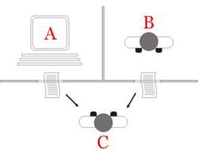
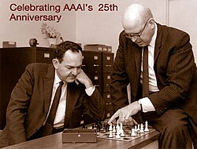

History of artificial intelligence
| Part of a series on |
| Artificial intelligence (AI) |
|---|
| Glossary |
| History of computing |
|---|
| Hardware |
| Software |
| Computer science |
| Modern concepts |
| By country |
| Timeline of computing |
| Glossary of computer science |

The history of artificial intelligence (AI) began in antiquity, with myths, stories, and rumors of artificial beings endowed with intelligence by master craftsmen.[citation needed]
The field of research that eventually evolved into what is widely described as artifical intelligence was founded at a workshop held on the campus of Dartmouth College in 1956.[1] At the workshop, a concept of the first AI program, Logic Theorist, was presented by future Turing Awardee Allen Newell and future Nobel Laureate Herbert A. Simon, with help from J. C. Shaw. The software architecture of this program differed from modern AI systems in that it was a hand-written fixed script. Attendees of the workshop became the leaders of AI research for decades. Many of them predicted that machines as intelligent as humans would exist within a generation. Despite the eventual success of its attendees and the field as a whole, the workshop was considered a failure. "When the workshop failed to deliver, AI was dismissed as a pipe dream and research funding dried up".[2][3]
It became apparent that researchers had underestimated the complexity of this objective.[4] In 1974, criticism from James Lighthill and pressure from the U.S. Congress led the U.S. and British Governments to stop funding undirected research into artificial intelligence. Seven years later, a visionary initiative by the Japanese Government and the success of expert systems reinvigorated investment in AI, and by the late 1980s, the industry had grown into a billion-dollar enterprise. However, investors' enthusiasm waned in the 1990s, and the field was criticized in the press and avoided by industry (a period known as an "AI winter"). Nevertheless, research and funding continued to grow under other names.
In the early 2000s, machine learning was applied to a wide range of problems in academia and industry. The success was attributable to the availability of powerful computer hardware, the accumulation of expansive data sets, and the application of rigorous mathematical methods. Soon after, deep learning proved to be a breakthrough technology, eclipsing all other methods. The transformer architecture, introduced in 2017, and was utilized to produce generative AI applications, among other implementation.
Investment in AI boomed in the 2020s. The AI boom, initiated by the development of transformer architecture, led to the rapid scaling and public releases of large language models (LLMs) like ChatGPT and Claude (AI). These models exhibit human-like traits of knowledge, attention, and creativity, and have been integrated into various sectors, fueling exponential investment in AI. However, concerns about the potential risks and ethical implications of advanced AI have also emerged, causing debate about the future of AI and its impact on society.
Precursors
[edit]Myth, folklore, fiction and speculation
[edit]Mechanical men and artificial beings appear in Greek myths, such as the golden robots of Hephaestus,[5] the bronze giant Talos[6] and Pygmalion's Galatea[7]. In the Middle Ages, there were rumors of secret mystical or alchemical means of placing mind into matter, such as Jabir ibn Hayyan's Takwin,[8] Paracelsus' homunculus,[9] Rabbi Judah Loew's Golem[10] and Roger Bacon's brazen head.[11] By the 19th century, ideas about artificial men and thinking machines became a popular theme in fiction. Notable works include Mary Shelley's Frankenstein (1818), Johann Wolfgang von Goethe's, Faust, Part Two (1832), and Karel Čapek's R.U.R. (Rossum's Universal Robots) (1921).[12][13] Stories of these creatures and their fates consider many of the same hopes, fears and ethical concerns that are presented by modern artificial intelligence.[14] Issues relevant to AI were also discussed in speculative essays such as Samuel Butler's "Darwin among the Machines" (1863).[15]
Automata
[edit]
Realistic humanoid automata were built by craftsmen from many civilizations, including Yan Shi,[16] Hero of Alexandria,[17] Al-Jazari,[18] Haroun al-Rashid,[19] Jacques de Vaucanson,[20][21] Leonardo Torres y Quevedo,[22] Pierre Jaquet-Droz and Wolfgang von Kempelen.[23][24] The oldest known automata were sacred statues of ancient Egypt and Greece.[25][26] The faithful believed that craftsman had imbued these figures with very real minds, capable of wisdom and emotion—Hermes Trismegistus wrote that "by discovering the true nature of the gods, man has been able to reproduce it".[27]
Formal reasoning
[edit]Artificial intelligence is based on the assumption that the process of human thought can be mechanized. Chinese, Indian and Greek philosophers developed structured methods of formal reasoning by the first millennium BCE. Formal logic was invented and improved by Greek, Islamic and European philosophers, such as Aristotle, Euclid, Al-Khwarizmi, Duns Scotus and René Descartes.
Spanish philosopher Ramon Llull (1232–1315) developed several logical machines devoted to the production of knowledge by logical means;[28][29] Llull described his machines as mechanical entities that could combine basic and undeniable truths by simple logical operations, produced by the machine by mechanical meanings, in such ways as to produce all the possible knowledge.[30] Llull's work had a great influence on Gottfried Leibniz, who redeveloped his ideas.[31]

In the 17th century, Leibniz, Thomas Hobbes and René Descartes explored the possibility that all rational thought could be made as systematic as algebra or geometry.[32] Hobbes wrote in Leviathan: "For reason ... is nothing but reckoning, that is adding and subtracting".[33] Leibniz described a universal language of reasoning, the characteristica universalis, which would reduce argumentation to calculation so that "there would be no more need of disputation between two philosophers than between two accountants. For it would suffice to take their pencils in hand, down to their slates, and to say to each other (with a friend as witness, if they liked): Let us calculate."[34]
Boole's The Laws of Thought (1854) and Frege's Begriffsschrift (1879) defined the modern form of symbolic mathematical logic.[35] Building on Frege's system, Russell and Whitehead presented a formal treatment of the foundations of arithmetic in the Principia Mathematica in 1913. Inspired by their success, David Hilbert challenged mathematicians of the 1920s and 30s to formalize all mathematical reasoning. In response, Gödel's incompleteness proof,[36] Turing's machine[36] and Church's Lambda calculus[a] showed that there were, in fact, limits to what formal mathematics could do.
However, within these limits, the Church-Turing thesis implied that a mechanical device, shuffling symbols as simple as 0 and 1, could imitate any conceivable process of mathematical reasoning or problem solving.[36] The key insight was the Turing machine—a simple theoretical construct that captured the essence of abstract symbol manipulation.[38] This device and the ideas behind it would inspire engineers and mathematicians of the 1940s to build machines that could theoretically carry out any form of formal reasoning or problem solving.
Computer science
[edit]Calculating machines were designed or built in antiquity and throughout history by many people, including Gottfried Leibniz,[29][39] Joseph Marie Jacquard,[40] Charles Babbage,[40][41] Percy Ludgate,[42] Leonardo Torres Quevedo,[43] Vannevar Bush,[44] and others. Ada Lovelace speculated that Babbage's machine was "a thinking or ... reasoning machine", but warned "It is desirable to guard against the possibility of exaggerated ideas that arise as to the powers" of the machine.[45][46]
The first modern computers were the massive machines of the Second World War (such as Konrad Zuse's Z3, Tommy Flowers' Heath Robinson and Colossus, Atanasoff and Berry's ABC, and ENIAC at the University of Pennsylvania).[47] ENIAC was based on the theoretical foundation laid by Alan Turing and developed by John von Neumann,[48] and proved to be the most influential.[47]
Birth of artificial intelligence (1941–1956)
[edit]
The earliest research into thinking machines was inspired by a confluence of ideas that became prevalent in the late 1930s, 1940s, and early 1950s. Recent research in neurology had shown that the brain was an electrical network of neurons that fired in all-or-nothing pulses. Norbert Wiener's cybernetics described control and stability in electrical networks. Claude Shannon's information theory described digital signals (i.e., all-or-nothing signals). Alan Turing's theory of computation showed that any form of computation could be described digitally. The close relationship between these ideas suggested that it might be possible to construct an "electronic brain".
In the 1940s and 50s, a handful of scientists from a variety of fields (mathematics, psychology, engineering, economics and political science) explored several research directions that would be vital to later AI research.[49] Alan Turing was among the first people to seriously investigate the theoretical possibility of "machine intelligence".[50] The field of "artificial intelligence research" was founded as an academic discipline in 1956.[51]


Turing test
[edit]
In 1950, Turing published a landmark paper, "Computing Machinery and Intelligence", in which he speculated about the possibility of creating machines that think.[53][b] In the paper, he noted that "thinking" is difficult to define and devised his famous Turing test: If a machine could carry on a conversation (over a teleprinter) that was indistinguishable from a conversation with a human being, then it was reasonable to say that the machine was "thinking".[54] This simplified version of the problem allowed Turing to argue convincingly that a "thinking machine" was at least plausible and the paper answered all the most common objections to the proposition.[55] The Turing test was the first serious proposal in the philosophy of artificial intelligence.
Artificial neural networks
[edit]Walter Pitts and Warren McCulloch analyzed networks of idealized artificial neurons and showed how they might perform simple logical functions in 1943. They were the first to describe what later researchers would call a neural network.[56] The paper was influenced by Turing's paper "On Computable Numbers" from 1936, using similar two-state boolean 'neurons', but was the first to apply it to neuronal function.[50] One of the students inspired by Pitts and McCulloch was Marvin Minsky who was a 24-year-old graduate student at the time. In 1951, Minsky and Dean Edmonds built the first neural net machine, the SNARC.[57] Minsky would later become one of the most important leaders and innovators in Artificial Intelligence.
Cybernetic robots
[edit]Experimental robots such as William Grey Walter's turtles and the Johns Hopkins Beast, were built in the 1950s. These machines did not use computers, digital electronics, or symbolic reasoning; they were controlled entirely by analog circuitry.[58]
Game AI
[edit]In 1951, using the Ferranti Mark 1 machine of the University of Manchester, Christopher Strachey wrote a checkers program[59] and Dietrich Prinz wrote one for chess.[60] Arthur Samuel's checkers program, the subject of his 1959 paper "Some Studies in Machine Learning Using the Game of Checkers", eventually achieved sufficient skill to challenge a respectable amateur.[61] Samuel's program was among the first uses of what would later be called machine learning.[62] Game AI would continue to be used as a measure of progress in AI throughout its history.
Symbolic reasoning and the Logic Theorist
[edit]

When access to digital computers became possible in the mid-fifties, a few scientists instinctively recognized that a machine that could manipulate numbers could also manipulate symbols and that the manipulation of symbols could well be the essence of human thought. This was a new approach to creating thinking machines.[63][64]
In 1955, Allen Newell and future Nobel Laureate Herbert A. Simon created the "Logic Theorist", with help from J. C. Shaw. The program would eventually prove 38 of the first 52 theorems in Russell and Whitehead's Principia Mathematica, and find new and more elegant proofs for some.[65] Simon said that they had "solved the venerable mind/body problem, explaining how a system composed of matter can have the properties of mind."[66][c] The symbolic reasoning paradigm they introduced would dominate AI research and funding until the mid-90s, as well as inspire the cognitive revolution.
Dartmouth Workshop
[edit]The Dartmouth workshop of 1956 was a pivotal event that marked the formal inception of AI as an academic discipline.[51] It was organized by Marvin Minsky and John McCarthy, with the support of two senior scientists Claude Shannon and Nathan Rochester of IBM. The proposal for the conference stated they intended to test the assertion that "every aspect of learning or any other feature of intelligence can be so precisely described that a machine can be made to simulate it".[67][d] The term "Artificial Intelligence" was introduced by John McCarthy at the workshop.[e] The participants included Ray Solomonoff, Oliver Selfridge, Trenchard More, Arthur Samuel, Allen Newell and Herbert A. Simon, all of whom would create important programs during the first decades of AI research.[73][f] At the workshop, Newell and Simon debuted the "Logic Theorist".[74] The workshop was the moment that AI gained its name, its mission, its first major success and its key players, and is widely considered the birth of AI.[g]
Cognitive revolution
[edit]In the autumn of 1956, Newell and Simon also presented the Logic Theorist at a meeting of the Special Interest Group in Information Theory at the Massachusetts Institute of Technology (MIT). At the same meeting, Noam Chomsky discussed his generative grammar, and George Miller described his landmark paper "The Magical Number Seven, Plus or Minus Two".[47] Miller wrote "I left the symposium with a conviction, more intuitive than rational, that experimental psychology, theoretical linguistics, and the computer simulation of cognitive processes were all pieces from a larger whole."[76]
This meeting was the beginning of the "cognitive revolution"—an interdisciplinary paradigm shift in psychology, philosophy, computer science and neuroscience. It inspired the creation of the sub-fields of symbolic artificial intelligence, generative linguistics, cognitive science, cognitive psychology, cognitive neuroscience and the philosophical schools of computationalism and functionalism. All these fields used related tools to model the mind and results discovered in one field were relevant to the others.
The cognitive approach allowed researchers to consider "mental objects" like thoughts, plans, goals, facts or memories, often analyzed using high level symbols in functional networks. These objects had been forbidden as "unobservable" by earlier paradigms such as behaviorism and positivism.[h] Symbolic mental objects would become the major focus of AI research and funding for the next several decades.
Early successes (1956–1974)
[edit]The programs developed in the years after the Dartmouth Workshop were, to most people, simply "astonishing":[i] computers were solving algebra word problems, proving theorems in geometry and learning to speak English. Few at the time would have believed that such "intelligent" behavior by machines was possible at all.[80][81][79] Researchers expressed an intense optimism in private and in print, predicting that a fully intelligent machine would be built in less than 20 years.[82] Government agencies like the Defense Advanced Research Projects Agency (DARPA, then known as "ARPA") poured money into the field.[83] Artificial Intelligence laboratories were set up at many British and US universities in the latter 1950s and early 1960s.[50]
Approaches
[edit]There were many successful programs and new directions in the late 50s and 1960s. Some of the most influential included:
Reasoning, planning and problem solving as search
[edit]Many early AI programs used the same basic algorithm. To achieve some goal (like winning a game or proving a theorem), they proceeded step by step towards it (by making a move or a deduction) as if searching through a maze, backtracking whenever they reached a dead end.[84] The principal difficulty was that, for many problems, the number of possible paths through the "maze" was astronomical (a situation known as a "combinatorial explosion"). Researchers would reduce the search space by using heuristics that would eliminate paths that were unlikely to lead to a solution.[85]
Newell and Simon tried to capture a general version of this algorithm in a program called the "General Problem Solver".[86][87] Other "searching" programs accomplished impressive results like solving problems in geometry and algebra, such as Herbert Gelernter's Geometry Theorem Prover (1958)[88] and Symbolic Automatic Integrator (SAINT), written by Minsky's student James Slagle in 1961.[89][90] Other programs searched through goals and subgoals to plan actions, like the STRIPS system developed at Stanford to control the behavior of the robot Shakey.[91]
Natural language
[edit]
An important goal of AI research is to allow computers to communicate in natural languages like English. An early success was Daniel Bobrow's program STUDENT, which could solve high-school algebra word-problems.[92]
A semantic net represents concepts (e.g., "house", "door") as nodes, and relations among concepts as links between the nodes (e.g. "has-a"). Ross Quillian wrote the first AI program to use a semantic net,[93] and the most successful (and controversial) version was Roger Schank's Conceptual dependency theory.[94]
Joseph Weizenbaum's ELIZA could carry out conversations that were so realistic that users occasionally were fooled into thinking they were communicating with a human being and not with a computer program (see ELIZA effect). But in fact, ELIZA simply gave a canned response or repeated back what was said to it, rephrasing its response with a few grammar-rules. ELIZA was the first chatbot.[95][96][97]
Micro-worlds
[edit]In the late 60s, Marvin Minsky and Seymour Papert of the MIT AI Laboratory proposed that AI research should focus on artificially simple situations known as micro-worlds.[j] They pointed out that in successful sciences like physics, basic principles were often best understood using simplified models like frictionless planes or perfectly rigid bodies. Much of the research focused on a "blocks world", which consists of colored blocks of various shapes and sizes arrayed on a flat surface.[98]
This paradigm led to innovative work in machine vision by Gerald Sussman, Adolfo Guzman, David Waltz (who invented "constraint propagation"), and especially Patrick Winston. At the same time, Minsky and Papert built a robot arm that could stack blocks, bringing the blocks world to life. Terry Winograd's SHRDLU could communicate in ordinary English sentences about the micro-world, plan operations and execute them.[98]
Perceptrons and early neural networks
[edit]In the 1960s, research-funders primarily supported laboratories researching symbolic AI, however, a few laboratories pursued research in neural networks.
_(20897323365).jpg)
The perceptron, a single-layer neural network was introduced in 1958 by Frank Rosenblatt[99] (who had been a schoolmate of Marvin Minsky at the Bronx High School of Science).[100] Like most AI researchers, he was optimistic about their power, predicting that a perceptron "may eventually be able to learn, make decisions, and translate languages".[101] Rosenblatt was primarily funded by the Office of Naval Research.[102]
Bernard Widrow and his student Ted Hoff built ADALINE (1960) and MADALINE (1962), which had up to 1000 adjustable weights.[103][104] A group at Stanford Research Institute led by Charles A. Rosen and Alfred E. (Ted) Brain built two neural-network machines named MINOS I (1960) and II (1963), mainly funded by the U.S. Army Signal Corps. MINOS II[105] had 6600 adjustable weights,[106] and was controlled with an SDS 910 computer in a configuration named MINOS III (1968), which could classify symbols on army maps, and recognize hand-printed characters on Fortran coding sheets.[107][108] Most of neural-network research during this early period involved building and using bespoke hardware, rather than simulation on digital computers.[k]
However, partly due to lack of results and partly due to competition from symbolic AI research, the MINOS project ran out of funding in 1966. Rosenblatt failed to secure continued funding in the 1960s.[109] In 1969, research came to a sudden halt with the publication of Minsky and Papert's 1969 book Perceptrons.[110] It suggested that there were severe limitations to what perceptrons could do and that Rosenblatt's predictions had been grossly exaggerated. The effect of the book was that virtually no research was funded in connectionism for 10 years.[111] The competition for government funding ended with the victory of symbolic AI approaches over neural networks.[108][109]
Minsky (who had worked on SNARC) became a staunch objector to pure connectionist AI. Widrow (who had worked on ADALINE) turned to adaptive signal processing. The SRI group (which worked on MINOS) turned to symbolic AI and robotics.[108][109]
The main problem was the inability to train multilayered networks (versions of backpropagation had already been used in other fields, but it was unknown to these researchers).[112][111] The AI community became aware of backpropagation in the 1980s,[113] and, in the 21st century, neural networks would become enormously successful, fulfilling all of Rosenblatt's optimistic predictions. Rosenblatt did not live to see this, however, as he died in a boating accident in 1971.[114]
Optimism
[edit]The first generation of AI researchers made the following predictions about their work:
- 1958, H. A. Simon and Allen Newell: "within ten years a digital computer will be the world's chess champion" and "within ten years a digital computer will discover and prove an important new mathematical theorem."[115]
- 1965, H. A. Simon: "machines will be capable, within twenty years, of doing any work a man can do."[116]
- 1967, Marvin Minsky: "Within a generation... the problem of creating 'artificial intelligence' will substantially be solved."[117]
- 1970, Marvin Minsky (in Life magazine): "In from three to eight years we will have a machine with the general intelligence of an average human being."[118][l]
Financing
[edit]In June 1963, MIT received a $2.2 million grant from the newly formed Advanced Research Projects Agency (ARPA, later known as DARPA). The money was used to fund project MAC which subsumed the "AI Group" founded by Minsky and McCarthy five years earlier. DARPA continued to provide $3 million each year until the 1970s.[121] DARPA made similar grants to Newell and Simon's program at Carnegie Mellon University and to Stanford University's AI Lab, founded by John McCarthy in 1963.[122] Another important AI laboratory was established at Edinburgh University by Donald Michie in 1965.[123] These four institutions would continue to be the main centers of AI research and funding in academia for many years.[124][m]
The money was given with few strings attached: J. C. R. Licklider, then the director of ARPA, believed that his organization should "fund people, not projects!" and allowed researchers to pursue whatever directions might interest them.[126] This created a freewheeling atmosphere at MIT that gave birth to the hacker culture,[127] but this "hands off" approach did not last.
First AI winter (1974–1980)
[edit]In the 1970s, AI was subject to critiques and financial setbacks. AI researchers had failed to appreciate the difficulty of the problems they faced. Their tremendous optimism had raised public expectations impossibly high, and when the promised results failed to materialize, funding targeted at AI was severely reduced.[128] The lack of success indicated that the techniques being used by AI researchers at the time were insufficient to achieve their goals.[129][130]
These setbacks did not affect the growth and progress of the field, however. The funding cuts only impacted a handful of major laboratories[131] and the critiques were largely ignored.[132] General public interest in the field continued to grow,[131] the number of researchers increased dramatically,[131] and new ideas were explored in logic programming, commonsense reasoning and many other areas. Historian Thomas Haigh argued in 2023 that there was no winter,[131] and AI researcher Nils Nilsson described this period as the most "exciting" time to work in AI.[133]
Problems
[edit]In the early seventies, the capabilities of AI programs were limited. Even the most impressive could only handle trivial versions of the problems they were supposed to solve;[n] all the programs were, in some sense, "toys".[135] AI researchers had begun to run into several limits that would be only conquered decades later, and others that still stymie the field in the 2020s:
- Limited computer power: There was not enough memory or processing speed to accomplish anything truly useful.[o] For example: Ross Quillian's successful work on natural language was demonstrated with a vocabulary of only 20 words, because that was all that would fit in memory.[137] Hans Moravec argued in 1976 that computers were still millions of times too weak to exhibit intelligence. He suggested an analogy: artificial intelligence requires computer power in the same way that aircraft require horsepower. Below a certain threshold, it's impossible, but, as power increases, eventually it could become easy. "With enough horsepower," he wrote, "anything will fly".[138][p]
- Intractability and the combinatorial explosion: In 1972 Richard Karp (building on Stephen Cook's 1971 theorem) showed there are many problems that can only be solved in exponential time. Finding optimal solutions to these problems requires extraordinary amounts of computer time, except when the problems are trivial. This limitation applied to all symbolic AI programs that used search trees and meant that many of the "toy" solutions used by AI would never scale to useful systems.[134][130]
- Moravec's paradox: Early AI research had been very successful at getting computers to do "intelligent" tasks like proving theorems, solving geometry problems and playing chess. Their success at these intelligent tasks convinced them that the problem of intelligent behavior had been largely solved.[140][141] However, they utterly failed to make progress on "unintelligent" tasks like recognizing a face or crossing a room without bumping into anything.[140][142] By the 1980s, researchers would realize that symbolic reasoning was utterly unsuited for these perceptual and sensorimotor tasks and that there were limits to this approach.[141]
- The breadth of commonsense knowledge: Many important artificial intelligence applications like vision or natural language require enormous amounts of information about the world: the program needs to have some idea of what it might be looking at or what it is talking about. This requires that the program know most of the same things about the world that a child does. Researchers soon discovered that this was a vast amount of information with billions of atomic facts. No one in 1970 could build a database large enough and no one knew how a program might learn so much information.[143]
- Representing commonsense reasoning: Several related problems[q] appeared when researchers tried to represent commonsense reasoning using formal logic or symbols. Descriptions of very ordinary deductions tended to get longer and longer the more one worked on them, as more and more exceptions, clarifications and distinctions were required. [r] However, when people thought about ordinary concepts, they did not rely on precise definitions, rather they seemed to make hundreds of imprecise assumptions, correcting them when necessary using their entire body of commonsense knowledge. Gerald Sussman observed that "using precise language to describe essentially imprecise concepts doesn't make them any more precise."[144]
Decrease in funding
[edit]The agencies that funded AI research, such as the British government, DARPA and the National Research Council (NRC) became frustrated with the lack of progress and eventually cut off almost all funding for undirected AI research. The pattern began in 1966 when the Automatic Language Processing Advisory Committee (ALPAC) report criticized machine translation efforts. After spending $20 million, the NRC ended all support.[145] In 1973, the Lighthill report on the state of AI research in the UK criticized the failure of AI to achieve its "grandiose objectives" and led to the dismantling of AI research in that country.[146] (The report specifically mentioned the combinatorial explosion problem as a reason for AI's failings.)[130][134][s] DARPA was deeply disappointed with researchers working on the Speech Understanding Research program at CMU and canceled an annual grant of $3 million.[148][t]
Hans Moravec blamed the crisis on the unrealistic predictions of his colleagues. "Many researchers were caught up in a web of increasing exaggeration."[149][u] However, there was another issue: since the passage of the Mansfield Amendment in 1969, DARPA had been under increasing pressure to fund "mission-oriented direct research, rather than basic undirected research". Funding for the creative, freewheeling exploration that had gone on in the 60s would not come from DARPA, which instead directed money at specific projects with clear objectives, such as autonomous tanks and battle management systems.[150][v]
The major laboratories (MIT, Stanford, CMU and Edinburgh) had been receiving generous support from their governments, and when it was withdrawn, these were the only places that were seriously impacted by the budget cuts. The thousands of researchers outside these institutions and the many thousands that were joining the field were unaffected.[131]
Philosophical and ethical critiques
[edit]Several philosophers had strong objections to the claims being made by AI researchers. One of the earliest was John Lucas, who argued that Gödel's incompleteness theorem showed that a formal system (such as a computer program) could never see the truth of certain statements, while a human being could.[152] Hubert Dreyfus ridiculed the broken promises of the 1960s and critiqued the assumptions of AI, arguing that human reasoning actually involved very little "symbol processing" and a great deal of embodied, instinctive, unconscious "know how".[w][154] John Searle's Chinese Room argument, presented in 1980, attempted to show that a program could not be said to "understand" the symbols that it uses (a quality called "intentionality"). If the symbols have no meaning for the machine, Searle argued, then the machine can not be described as "thinking".[155]
These critiques were not taken seriously by AI researchers. Problems like intractability and commonsense knowledge seemed much more immediate and serious. It was unclear what difference "know how" or "intentionality" made to an actual computer program. MIT's Minsky said of Dreyfus and Searle, "they misunderstand, and should be ignored."[156] Dreyfus, who also taught at MIT, was given a cold shoulder: he later said that AI researchers "dared not be seen having lunch with me."[157] Joseph Weizenbaum, the author of ELIZA, was also an outspoken critic of Dreyfus' positions, but he "deliberately made it plain that [his AI colleagues' treatment of Dreyfus] was not the way to treat a human being,"[x] and was unprofessional and childish.[159]
Weizenbaum began to have serious ethical doubts about AI when Kenneth Colby wrote a "computer program which can conduct psychotherapeutic dialogue" based on ELIZA.[160][161][y] Weizenbaum was disturbed that Colby saw a mindless program as a serious therapeutic tool. A feud began, and the situation was not helped when Colby did not credit Weizenbaum for his contribution to the program. In 1976, Weizenbaum published Computer Power and Human Reason which argued that the misuse of artificial intelligence has the potential to devalue human life.[163]
Logic at Stanford, CMU, and Edinburgh
[edit]Logic was introduced into AI research as early as 1958, by John McCarthy in his Advice Taker proposal.[164][88] In 1963, J. Alan Robinson had discovered a simple method to implement deduction on computers, the resolution and unification algorithms.[88] However, straightforward implementations, like those attempted by McCarthy and his students in the late 1960s, were especially intractable: the programs required astronomical numbers of steps to prove simple theorems.[164][165] A more fruitful approach to logic was developed in the 1970s by Robert Kowalski at the University of Edinburgh, and soon this led to the collaboration with French researchers Alain Colmerauer and Philippe Roussel who created the successful logic programming language Prolog.[166] Prolog uses a subset of logic (Horn clauses, closely related to "rules" and "production rules") that permits tractable computation. Rules would continue to be influential, providing a foundation for Edward Feigenbaum's expert systems and the continuing work by Allen Newell and Herbert A. Simon that would lead to Soar and their unified theories of cognition.[167]
Critics of the logical approach noted, as Dreyfus had, that human beings rarely used logic when they solved problems. Experiments by psychologists like Peter Wason, Eleanor Rosch, Amos Tversky, Daniel Kahneman and others provided proof.[z] McCarthy responded that what people do is irrelevant. He argued that what is really needed are machines that can solve problems—not machines that think as people do.[aa]
MIT's "anti-logic" approach
[edit]Among the critics of McCarthy's approach were his colleagues across the country at MIT. Marvin Minsky, Seymour Papert and Roger Schank were trying to solve problems like "story understanding" and "object recognition" that required a machine to think like a person. To use ordinary concepts like "chair" or "restaurant" they had to make all the same illogical assumptions that people normally made. Unfortunately, imprecise concepts like these are hard to represent in logic. MIT chose instead to focus on writing programs that solved a given task without using high-level abstract definitions or general theories of cognition, and measured performance by iterative testing, rather than arguments from first principles. Schank described their "anti-logic" approaches as "scruffy", as opposed to the "neat" paradigm used by McCarthy, Kowalski, Feigenbaum, Newell and Simon.[168][ab]
In 1975, in a seminal paper, Minsky noted that many of his fellow researchers were using the same kind of tool: a framework that captures all our common sense assumptions about something. For example, if we use the concept of a bird, there is a constellation of facts that immediately come to mind: we might assume that it flies, eats worms and so on (none of which are true for all birds). Minsky associated these assumptions with the general category and they could be inherited by the frames for subcategories and individuals, or over-ridden as necessary. He called these structures frames. Schank used a version of frames he called "scripts" to successfully answer questions about short stories in English.[169] Frames would eventually be widely used in software engineering under the name object-oriented programming.
The logicians rose to the challenge. Pat Hayes claimed that "most of 'frames' is just a new syntax for parts of first-order logic." But he noted that "there are one or two apparently minor details which give a lot of trouble, however, especially defaults".[170]
Ray Reiter admitted that "conventional logics, such as first-order logic, lack the expressive power to adequately represent the knowledge required for reasoning by default".[171] He proposed augmenting first-order logic with a closed world assumption that a conclusion holds (by default) if its contrary cannot be shown. He showed how such an assumption corresponds to the common-sense assumption made in reasoning with frames. He also showed that it has its "procedural equivalent" as negation as failure in Prolog. The closed world assumption, as formulated by Reiter, "is not a first-order notion. (It is a meta notion.)"[171] However, Keith Clark showed that negation as finite failure can be understood as reasoning implicitly with definitions in first-order logic including a unique name assumption that different terms denote different individuals.[172]
During the late 1970s and throughout the 1980s, a variety of logics and extensions of first-order logic were developed both for negation as failure in logic programming and for default reasoning more generally. Collectively, these logics have become known as non-monotonic logics.
Boom (1980–1987)
[edit]In the 1980s, a form of AI program called "expert systems" was adopted by corporations around the world and knowledge became the focus of mainstream AI research. Governments provided substantial funding, such as Japan's fifth generation computer project and the U.S. Strategic Computing Initiative. "Overall, the AI industry boomed from a few million dollars in 1980 to billions of dollars in 1988."[113]
Expert systems become widely used
[edit]An expert system is a program that answers questions or solves problems about a specific domain of knowledge, using logical rules that are derived from the knowledge of experts.[173] The earliest examples were developed by Edward Feigenbaum and his students. Dendral, begun in 1965, identified compounds from spectrometer readings.[174][111] MYCIN, developed in 1972, diagnosed infectious blood diseases.[113] They demonstrated the feasibility of the approach.
Expert systems restricted themselves to a small domain of specific knowledge (thus avoiding the commonsense knowledge problem)[111] and their simple design made it relatively easy for programs to be built and then modified once they were in place. All in all, the programs proved to be useful: something that AI had not been able to achieve up to this point.[175]
In 1980, an expert system called R1 was completed at CMU for the Digital Equipment Corporation. It was an enormous success: it was saving the company 40 million dollars annually by 1986.[176] Corporations around the world began to develop and deploy expert systems and by 1985, they were spending over a billion dollars on AI, most of it in in-house AI departments.[177] An industry grew up to support them, including hardware companies like Symbolics and Lisp Machines and software companies such as IntelliCorp and Aion.[178]
Government funding increases
[edit]In 1981, the Japanese Ministry of International Trade and Industry set aside $850 million for the Fifth generation computer project. Their objectives were to write programs and build machines that could carry on conversations, translate languages, interpret pictures, and reason like human beings.[179] Much to the chagrin of scruffies, they initially chose Prolog as the primary computer language for the project.[180]
Other countries responded with new programs of their own. The UK began the £350 million Alvey project.[181] A consortium of American companies formed the Microelectronics and Computer Technology Corporation (or "MCC") to fund large-scale projects in AI and information technology.[182][181] DARPA responded as well, founding the Strategic Computing Initiative and tripling its investment in AI between 1984 and 1988.[183][184]
Knowledge revolution
[edit]The power of expert systems came from the expert knowledge they contained. They were part of a new direction in AI research that had been gaining ground throughout the 70s. "AI researchers were beginning to suspect—reluctantly, for it violated the scientific canon of parsimony—that intelligence might very well be based on the ability to use large amounts of diverse knowledge in different ways,"[185] writes Pamela McCorduck. "[T]he great lesson from the 1970s was that intelligent behavior depended very much on dealing with knowledge, sometimes quite detailed knowledge, of a domain where a given task lay".[186] Knowledge based systems and knowledge engineering became a major focus of AI research in the 1980s.[187] It was hoped that vast databases would solve the commonsense knowledge problem and provide the support that commonsense reasoning required.
In the 1980s, some researchers attempted to attack the commonsense knowledge problem directly, by creating a massive database that would contain all the mundane facts that the average person knows. Douglas Lenat, who started a database called Cyc, argued that there is no shortcut―the only way for machines to know the meaning of human concepts is to teach them, one concept at a time, by hand.[188]
New directions in the 1980s
[edit]Although symbolic knowledge representation and logical reasoning produced useful applications in the 80s and received massive amounts of funding, it was still unable to solve problems in perception, robotics, learning and common sense. A small number of scientists and engineers began to doubt that the symbolic approach would ever be sufficient for these tasks and developed other approaches, such as "connectionism", "soft" computing and reinforcement learning. Nils Nilsson called these approaches "sub-symbolic".
Revival of neural networks: "connectionism"
[edit]
In 1982, physicist John Hopfield was able to prove that a form of neural network (now called a "Hopfield net") could learn and process information, and provably converges after enough time under any fixed condition. It was a breakthrough, as it was previously thought that nonlinear networks would, in general, evolve chaotically.[189] Geoffrey Hinton proved a similar result about a device called a "Boltzmann machine".[190] (Hopfield and Hinton would eventually receive the 2024 Nobel prize for this work.[190]) In 1986, Hinton and David Rumelhart popularized a method for training neural networks called "backpropagation".[ac] These three developments helped to revive the exploration of artificial neural networks.[113][191]
Neural networks, along with several other similar models, received widespread attention after the 1986 publication of the Parallel Distributed Processing, a two-volume collection of papers edited by Rumelhart and psychologist James McClelland. The new field was named "connectionism" which was contrasted with symbolic AI.[113] Hinton called symbols the "luminous aether of AI"―that is, an unworkable and misleading model of intelligence.[113]
In 1990, Yann LeCun at Bell Labs used convolutional neural networks to recognize handwritten digits. The system was used widely in the 90s, reading zip codes and personal checks. This was the first genuinely useful application of neural networks.[192][193]
Robotics and embodied reason
[edit]Rodney Brooks, Hans Moravec and others argued that, to show real intelligence, a machine needs to have a body—it needs to perceive, move, survive, and deal with the world.[194] Sensorimotor skills are essential to higher level skills such as commonsense reasoning. They can't be efficiently implemented using abstract symbolic reasoning, so AI should solve the problems of perception, mobility, manipulation and survival without using symbolic representation at all. These robotics researchers advocated building intelligence "from the bottom up".[ad]
A precursor to this idea was David Marr, who had come to MIT in the late 1970s from a successful background in theoretical neuroscience to lead the group studying vision. He rejected all symbolic approaches (both McCarthy's logic and Minsky's frames), arguing that AI needed to understand the physical machinery of vision from the bottom up before any symbolic processing took place. (Marr's work would be cut short by leukemia in 1980.)[196]
In his 1990 paper "Elephants Don't Play Chess",[197] robotics researcher Brooks took direct aim at the physical symbol system hypothesis, arguing that symbols are not always necessary since "the world is its own best model. It is always exactly up to date. It always has every detail there is to be known. The trick is to sense it appropriately and often enough."[198]
In the 1980s and 1990s, many cognitive scientists also rejected the symbol processing model of the mind and argued that the body was essential for reasoning, a theory called the "embodied mind thesis".[199]
Soft computing and probabilistic reasoning
[edit]Soft computing uses methods that work with incomplete and imprecise information. They do not attempt to give precise, logical answers, but give results that are only "probably" correct. This allowed them to solve problems that precise symbolic methods could not handle. Press accounts often claimed these tools could "think like a human".[200][201]
Judea Pearl's Probabilistic Reasoning in Intelligent Systems: Networks of Plausible Inference, an influential 1988 book[202] brought probability and decision theory into AI.[203] Fuzzy logic, developed by Lofti Zadeh in the 60s, began to be more widely used in AI and robotics. Evolutionary computation and artificial neural networks also handle imprecise information, and are classified as "soft". In the 90s and early 2000s many other soft computing tools were developed and put into use, including Bayesian networks,[203] hidden Markov models,[203] information theory, and stochastic modeling. These tools, in turn depended on advanced mathematical techniques such as classical optimization. For a time in the 1990s and early 2000s, these soft tools were studied by a subfield of AI called "computational intelligence".[204]
Reinforcement learning
[edit]Reinforcement learning[205] rewards an agent every time it performs a desired action well, and may give negative rewards (or "punishments") when it performs poorly. It was described in the first half of the twentieth century by psychologists using animal models, such as Thorndike,[206][207] Pavlov[208] and Skinner.[209] In the 1950s, Alan Turing[207][210] and Arthur Samuel[207] foresaw the role of reinforcement learning in AI.
A successful and influential research program was led by Richard Sutton and Andrew Barto beginning in 1972. Their collaboration revolutionized the study of reinforcement learning and decision making over the past four decades.[211][212] In 1988, Sutton described machine learning in terms of decision theory (i.e., the Markov decision process). This gave the subject a solid theoretical foundation and access to a large body of theoretical results developed in the field of operations research.[212]
Also in 1988, Sutton and Barto developed the "temporal difference" (TD) learning algorithm, where the agent is rewarded only when its predictions show improvement. It significantly outperformed previous algorithms.[213] TD-learning was used by Gerald Tesauro in 1992 in the program TD-Gammon, which played backgammon as well as the best human players. The program learned the game by playing against itself with zero prior knowledge.[214] In an interesting case of interdisciplinary convergence, neurologists discovered in 1997 that the dopamine reward system in brains also uses a version of the TD-learning algorithm.[215][216][217] TD learning would be become highly influential in the 21st century, used in both AlphaGo and AlphaZero.[218]
Second AI winter (1990s)
[edit]The business community's fascination with AI rose and fell in the 1980s in the classic pattern of an economic bubble. As dozens of companies failed, the perception in the business world was that the technology was not viable.[219] The damage to AI's reputation would last into the 21st century. Inside the field, there was little agreement on the reasons for AI's failure to fulfill the dream of human-level intelligence that had captured the imagination of the world in the 1960s. Together, all these factors helped to fragment AI into competing subfields focused on particular problems or approaches, sometimes even under new names that disguised the tarnished pedigree of "artificial intelligence".[220]
Over the next 20 years, AI consistently delivered working solutions to specific isolated problems. By the late 1990s, it was being used throughout the technology industry, although somewhat behind the scenes. The success was due to increasing computer power, by collaboration with other fields (such as mathematical optimization and statistics) and using higher standards of scientific accountability.
AI winter
[edit]The term "AI winter" was coined by researchers who had survived the funding cuts of 1974 and had become concerned that enthusiasm for expert systems had spiraled out of control and that disappointment would certainly follow.[ae] Their fears were well founded: in the late 1980s and early 1990s, AI suffered a series of financial setbacks.[113]
The first indication of a change in weather was the sudden collapse of the market for specialized AI hardware in 1987. Desktop computers from Apple and IBM had been steadily gaining speed and power and in 1987, they became more powerful than the more expensive Lisp machines made by Symbolics and others. There was no longer a good reason to buy them. An entire industry worth half a billion dollars was demolished overnight.[222]
Eventually, the earliest successful expert systems, such as R1, proved too expensive to maintain. They were difficult to update, they could not learn, and they were "brittle" (i.e., they could make grotesque mistakes when given unusual inputs). Expert systems proved useful, but only in a few special contexts.[223]
In the late 1980s, the Strategic Computing Initiative cut funding to AI "deeply and brutally". New leadership at DARPA had decided that AI was not "the next wave" and directed funds towards projects that seemed more likely to produce immediate results.[224]
By 1991, the impressive list of goals penned in 1981 for Japan's Fifth Generation Project had not been met. Some of them, like "carry on a casual conversation", would not be accomplished for another 30 years. As with other AI projects, expectations had run much higher than what was actually possible.[225][af]
Over 300 AI companies had shut down, gone bankrupt, or been acquired by the end of 1993, effectively ending the first commercial wave of AI.[227] In 1994, HP Newquist stated in The Brain Makers that "The immediate future of artificial intelligence—in its commercial form—seems to rest in part on the continued success of neural networks."[227]
AI behind the scenes
[edit]In the 1990s, algorithms originally developed by AI researchers began to appear as parts of larger systems. AI had solved a lot of very difficult problems[ag] and their solutions proved to be useful throughout the technology industry,[228][229] such as data mining, industrial robotics, logistics, speech recognition,[230] banking software,[231] medical diagnosis,[231] and Google's search engine.[232][233]
The field of AI received little or no credit for these successes in the 1990s and early 2000s. Many of AI's greatest innovations have been reduced to the status of just another item in the tool chest of computer science.[234] Nick Bostrom explains: "A lot of cutting-edge AI has filtered into general applications, often without being called AI because once something becomes useful enough and common enough it's not labeled AI anymore."[231]
Many researchers in AI in the 1990s deliberately called their work by other names, such as informatics, knowledge-based systems, "cognitive systems" or computational intelligence. In part, this may have been because they considered their field to be fundamentally different from AI, but also the new names helped to procure funding.[230][235][236] In the commercial world at least, the failed promises of the AI winter continued to haunt AI research into the 2000s, as the New York Times reported in 2005: "Computer scientists and software engineers avoided the term artificial intelligence for fear of being viewed as wild-eyed dreamers."[237]
Mathematical rigor, greater collaboration, and a narrow focus
[edit]AI researchers began to develop and use sophisticated mathematical tools more than they ever had in the past.[238][239] Most of the new directions in AI relied heavily on mathematical models, including artificial neural networks, probabilistic reasoning, soft computing and reinforcement learning. In the 90s and 2000s, many other highly mathematical tools were adapted for AI. These tools were applied to machine learning, perception, and mobility.
There was a widespread realization that many of the problems that AI needed to solve were already being worked on by researchers in fields like statistics, mathematics, electrical engineering, economics, or operations research. The shared mathematical language allowed both a higher level of collaboration with more established and successful fields and the achievement of results that were measurable and provable; AI had become a more rigorous "scientific" discipline.[239] Another key reason for the success in the 90s was that AI researchers focused on specific problems with verifiable solutions (an approach later derided as narrow AI). This provided useful tools in the present, rather than speculation about the future.
Intelligent agents
[edit]A new paradigm called "intelligent agents" became widely accepted during the 1990s.[240][241][ah] Although earlier researchers had proposed modular "divide and conquer" approaches to AI,[ai] the intelligent agent did not reach its modern form until Judea Pearl, Allen Newell, Leslie P. Kaelbling, and others brought concepts from decision theory and economics into the study of AI.[242] When the economist's definition of a rational agent was married to computer science's definition of an object or module, the intelligent agent paradigm was complete.
An intelligent agent is a system that perceives its environment and takes actions which maximize its chances of success. By this definition, simple programs that solve specific problems are "intelligent agents", as are human beings and organizations of human beings, such as firms. The intelligent agent paradigm defines AI research as "the study of intelligent agents".[aj] This is a generalization of some earlier definitions of AI: it goes beyond studying human intelligence; it studies all kinds of intelligence. The paradigm gave researchers license to study isolated problems and to disagree about methods, but still retain hope that their work could be combined into an agent architecture that would be capable of general intelligence.[243]
Milestones and Moore's law
[edit]On 11 May 1997, Deep Blue became the first computer chess-playing system to beat a reigning world chess champion, Garry Kasparov.[244] In 2005, a Stanford robot won the DARPA Grand Challenge by driving autonomously for 131 miles along an unrehearsed desert trail. Two years later, a team from CMU won the DARPA Urban Challenge by autonomously navigating 55 miles in an urban environment while responding to traffic hazards and adhering to traffic laws.[245]
These successes were not due to some revolutionary new paradigm, but mostly to the tedious application of engineering skill and to the tremendous increase in the speed and capacity of computers by the 90s.[ak] In fact, Deep Blue's computer was 10 million times faster than the Ferranti Mark 1 that Christopher Strachey taught to play chess in 1951.[al] This dramatic increase is measured by Moore's law, which predicted that the speed and memory capacity of computers would double every two years. The fundamental problem of "raw computer power" was slowly being overcome.
Arts and literature influenced by AI
[edit]Electronic literature experiments such as The Impermanence Agent (1998–2002) and digital art such as Agent Ruby used AI in their art and literature, "laying bare the bias accompanying forms of technology that feign objectivity."[249]
Big data, deep learning, AGI (2005–2017)
[edit]In the first decades of the 21st century, access to large amounts of data (known as "big data"), cheaper and faster computers and advanced machine learning techniques were successfully applied to many problems throughout the economy. A turning point was the success of deep learning around 2012, which improved the performance of machine learning on many tasks, including image and video processing, text analysis, and speech recognition.[250] Investment in AI increased along with its capabilities, and by 2016, the market for AI-related products, hardware, and software reached more than $8 billion, and the New York Times reported that interest in AI had reached a "frenzy".[251]
In 2002, Ben Goertzel and others became concerned that AI had largely abandoned its original goal of producing versatile, fully intelligent machines, and argued in favor of more direct research into artificial general intelligence (AGI). By the mid-2010s, several companies and institutions had been founded to pursue artificial general intelligence, such as OpenAI and Google's DeepMind. During the same period, new insights into superintelligence raised concerns that AI was an existential threat. The risks and unintended consequences of AI technology became an area of serious academic research after 2016.
Big data and big machines
[edit]The success of machine learning in the 2000s depended on the availability of vast amounts of training data and faster computers.[252] Russell and Norvig wrote that the "improvement in performance obtained by increasing the size of the data set by two or three orders of magnitude outweighs any improvement that can be made by tweaking the algorithm."[192] Geoffrey Hinton recalled that back in the 80s and 90s, the problem was that "our labeled datasets were thousands of times too small. [And] our computers were millions of times too slow."[253]
In 2007, a group at UMass Amherst released "Labeled Faces in the Wild", an annotated set of images of faces that was widely used to train and test face recognition systems for the next several decades.[254] Fei-Fei Li developed ImageNet, a database of three million images captioned by volunteers using the Amazon Mechanical Turk. Released in 2009, it was a useful body of training data and a benchmark for testing for the next generation of image processing systems.[255][192] In 2013, Tomáš Mikolov and colleagues at Google introduced word2vec as an open source resource. It used large amounts of data text scraped from the internet and word embedding to create a numeric vector to represent each word. Users were surprised at how well it was able to capture word meanings, for example, ordinary vector addition would give equivalences like China + River = Yangtze or London − England + France = Paris.[256]
The internet gave machine learning programs access to billions of pages of text and images that could be scraped. Large, privately held databases also contained relevant data. McKinsey Global Institute reported that "by 2009, nearly all sectors in the US economy had at least an average of 200 terabytes of stored data".[257] This collection of information was known in the 2000s as big data.
In a Jeopardy! exhibition match in February 2011, IBM's question answering system Watson defeated the two best Jeopardy! champions, Brad Rutter and Ken Jennings, by a significant margin.[258] Watson was trained on information available on the internet.[192]
Deep learning
[edit]In 2012, AlexNet, a deep learning model,[am] developed by Alex Krizhevsky, won the ImageNet Large Scale Visual Recognition Challenge, with significantly fewer errors than the second-place winner.[260][192] Krizhevsky worked with Geoffrey Hinton at the University of Toronto.[an] This was a turning point in machine learning: over the next few years, dozens of other approaches to image recognition were abandoned in favor of deep learning.[252]
Deep learning uses a multi-layer perceptron. Although this architecture has been known since the 60s, getting it to work requires powerful hardware and large amounts of training data.[261] Before these became available, improving the performance of image processing systems required hand-crafted ad hoc features that were difficult to implement.[261] Deep learning was simpler and more general.[ao]
Deep learning was applied to dozens of problems over the next few years (such as speech recognition, machine translation, medical diagnosis, and game playing). In every case, it showed enormous gains in performance.[252] Investment and interest in AI boomed as a result.[252]
The alignment problem
[edit]It became fashionable in the 2000s to begin talking about the future of AI again and several popular books considered the possibility of superintelligent machines and what they might mean for human society. Some of this was optimistic (such as Ray Kurzweil's The Singularity is Near), but others warned that a sufficiently powerful AI was existential threat to humanity, such as Nick Bostrom and Eliezer Yudkowsky.[262] The topic became widely covered in the press and many leading intellectuals and politicians commented on the issue.
AI programs in the 21st century are defined by their goals—the specific measures that they are designed to optimize. Nick Bostrom's influential 2014 book Superintelligence[263] argued that, if one isn't careful about defining these goals, the machine may cause harm to humanity in the process of achieving a goal. Stuart J. Russell used the example of an intelligent robot that kills its owner to prevent it from being unplugged, reasoning "you can't fetch the coffee if you're dead".[264] (This problem is known by the technical term "instrumental convergence".) The solution is to align the machine's goal function with the goals of its owner and humanity in general. Thus, the problem of mitigating the risks and unintended consequences of AI became known as "the value alignment problem" or AI alignment.[265]
At the same time, machine learning systems had begun to have disturbing unintended consequences. Cathy O'Neil explained how statistical algorithms had been among the causes of the 2008 economic crash,[266] Julia Angwin of ProPublica argued that the COMPAS system used by the criminal justice system exhibited racial bias under some measures,[267][ap] others showed that many machine learning systems exhibited some form of racial bias,[269] and there were many other examples of dangerous outcomes that had resulted from machine learning systems.[aq]
In 2016, the election of Donald Trump and the controversy over the COMPAS system illuminated several problems with the current technological infrastructure, including misinformation, social media algorithms designed to maximize engagement, the misuse of personal data and the trustworthiness of predictive models.[270] Issues of fairness and unintended consequences became significantly more popular at AI conferences, publications vastly increased, funding became available, and many researchers refocused their careers on these issues. The value alignment problem became a serious field of academic study.[271][ar]
Artificial general intelligence research
[edit]In the early 2000s, several researchers became concerned that mainstream AI was too focused on "measurable performance in specific applications"[273] (known as "narrow AI") and had abandoned AI's original goal of creating versatile, fully intelligent machines. An early critic was Nils Nilsson in 1995, and similar opinions were published by AI elder statesmen John McCarthy, Marvin Minsky, and Patrick Winston in 2007–2009. Minsky organized a symposium on "human-level AI" in 2004.[273] Ben Goertzel adopted the term "artificial general intelligence" for the new sub-field, founding a journal and holding conferences beginning in 2008.[274] The new field grew rapidly, buoyed by the continuing success of artificial neural networks and the hope that it was the key to AGI.
Several competing companies, laboratories and foundations were founded to develop AGI in the 2010s. DeepMind was founded in 2010 by three English scientists, Demis Hassabis, Shane Legg and Mustafa Suleyman, with funding from Peter Thiel and later Elon Musk. The founders and financiers were deeply concerned about AI safety and the existential risk of AI. DeepMind's founders had a personal connection with Yudkowsky, and Musk was among those who were actively raising the alarm.[275] Hassabis was both worried about the dangers of AGI and optimistic about its power; he hoped they could "solve AI, then solve everything else."[276] The New York Times wrote in 2023, "At the heart of this competition is a brain-stretching paradox. The people who say they are most worried about AI are among the most determined to create it and enjoy its riches. They have justified their ambition with their strong belief that they alone can keep AI from endangering Earth."[275]
In 2012, Geoffrey Hinton (who had been leading neural network research since the 80s) was approached by Baidu, which wanted to hire him and all his students for an enormous sum. Hinton decided to hold an auction and, at a Lake Tahoe AI conference, they sold themselves to Google for a price of $44 million. Hassabis took notice and sold DeepMind to Google in 2014, on the condition that it would not accept military contracts and would be overseen by an ethics board.[275]
.jpg)
Larry Page of Google, unlike Musk and Hassabis, was an optimist about the future of AI. Musk and Page became embroiled in an argument about the risk of AGI at Musk's 2015 birthday party. They had been friends for decades, but stopped speaking to each other shortly afterwards. Musk attended the only meeting of DeepMind's ethics board, where it became clear that Google was uninterested in mitigating the harm of AGI. Frustrated by his lack of influence, he founded OpenAI in 2015, enlisting Sam Altman to run it and hiring top scientists. OpenAI began as a non-profit, "free from the economic incentives that were driving Google and other corporations."[275] Musk became frustrated again and left the company in 2018. OpenAI turned to Microsoft for continued financial support and Altman and OpenAI formed a for-profit version of the company with more than $1 billion in financing.[275]
In 2021, Dario Amodei and 14 other scientists left OpenAI over concerns that the company was putting profits above safety. They formed Anthropic, which soon had $6 billion in financing from Microsoft and Google.[275]
Large language models, AI boom (2017–2026)
[edit]
_on_Google_Trends.svg)
The AI boom started with the initial development of key architectures and algorithms such as the transformer architecture in 2017, leading to the scaling and development of large language models exhibiting human-like traits of knowledge, attention, and creativity. The new AI era began in 2020, with the public release of a scaled large language model (LLM) GPT-3, the predecessor of ChatGPT.[278]
Transformer architecture and large language models
[edit]In 2017, researchers at Google Brain introduced the Transformer architecture in a paper titled "Attention Is All You Need". It's based on self-attention, which later became the basis of many large language models.[279] Large language models, based on the transformer, were further developed by other companies: OpenAI released GPT-3 in 2020, then DeepMind released Gato in 2022. These are foundation models: they are trained on vast quantities of unlabeled data and can be adapted to a wide range of downstream tasks. These models can discuss a huge number of topics and display general knowledge, which has raised questions around whether or not they are examples of artificial general intelligence.
In 2023, Microsoft Research tested the model with a large variety of tasks, and concluded that "it could reasonably be viewed as an early (yet still incomplete) version of an artificial general intelligence (AGI) system".[280]
In 2024, OpenAI o3, a type of advanced reasoning model developed by OpenAI, was announced. On the Abstraction and Reasoning Corpus for Artificial General Intelligence (ARC-AGI) benchmark developed by François Chollet in 2019, the model achieved an unofficial score of 87.5% on the semi-private test, surpassing the typical human score of 84%. The benchmark is supposed to be a necessary, but not sufficient, test for AGI. Speaking of the benchmark, Chollet has said, "You'll know AGI is here when the exercise of creating tasks that are easy for regular humans but hard for AI becomes simply impossible."[281]
Investment in AI
[edit]Investment in AI grew exponentially after 2020, with venture capital funding for generative AI companies increasing dramatically. Total AI investments rose from $18 billion in 2014 to $119 billion in 2021, with generative AI accounting for approximately 30% of investments by 2023.[282] According to metrics from 2017 to 2021, the United States outranked the rest of the world in terms of venture capital funding, number of startups, and AI patents granted.[283] The commercial AI scene became dominated by American Big Tech companies, whose investments in this area surpassed those from U.S.-based venture capitalists.[284] OpenAI's valuation reached $86 billion by early 2024,[285] while NVIDIA's market capitalization surpassed $3.3 trillion by mid-2024, making it the world's largest company by market capitalization as the demand for AI-capable GPUs surged.[286]
Advent of AI for public use
[edit]15.ai, launched in March 2020[287] by an anonymous MIT researcher,[288][289] was one of the earliest examples of generative AI gaining widespread public attention during the initial stages of the AI boom.[290] The free web application demonstrated the ability to clone character voices using neural networks with minimal training data, requiring as little as 15 seconds of audio to reproduce a voice—a capability later reproduced by OpenAI in 2024.[291] The service went viral on social media platforms in early 2021,[292][293] allowing users to generate speech for characters from popular media franchises, and became particularly notable for its pioneering role in popularizing AI voice synthesis for creative content and memes.[294]
Contemporary AI systems are now becoming human-competitive at general tasks, and we must ask ourselves: Should we let machines flood our information channels with propaganda and untruth? Should we automate away all the jobs, including the fulfilling ones? Should we develop nonhuman minds that might eventually outnumber, outsmart, obsolete and replace us? Should we risk loss of control of our civilization? Such decisions must not be delegated to unelected tech leaders. Powerful AI systems should be developed only once we are confident that their effects will be positive and their risks will be manageable. This confidence must be well justified and increase with the magnitude of a system's potential effects. OpenAI's recent statement regarding artificial general intelligence states that "At some point, it may be important to get an independent review before starting to train future systems, and for the most advanced efforts to agree to limit the rate of growth of compute used for creating new models." We agree. That point is now.
Therefore, we call on all AI labs to immediately pause for at least 6 months the training of AI systems more powerful than GPT-4. This pause should be public and verifiable, and include all key actors. If such a pause cannot be enacted quickly, governments should step in and institute a moratorium.
ChatGPT was launched on 30 November 2022, marking a pivotal moment in artificial intelligence's public adoption. Within days of its release it went viral, gaining over 100 million users in two months and becoming the fastest-growing consumer software application in history.[296] The chatbot's ability to engage in human-like conversations, write code, and generate creative content captured public imagination and led to rapid adoption across various sectors including education, business, and research.[297] ChatGPT's success prompted unprecedented responses from major technology companies—Google declared a "code red" and rapidly launched Gemini (formerly known as Google Bard), while Microsoft incorporated the technology into Bing Chat.[298]
The rapid adoption of these AI technologies sparked intense debate about their implications. Notable AI researchers and industry leaders voiced both optimism and concern about the accelerating pace of development. In March 2023, over 20,000 signatories, including computer scientist Yoshua Bengio, Elon Musk, and Apple co-founder Steve Wozniak, signed an open letter calling for a pause in advanced AI development, citing "profound risks to society and humanity."[299] However, other prominent researchers like Juergen Schmidhuber took a more optimistic view, emphasizing that the majority of AI research aims to make "human lives longer and healthier and easier."[300]
By mid-2024, however, the financial sector began to scrutinize AI companies more closely, particularly questioning their capacity to produce a return on investment commensurate with their massive valuations. Some prominent investors raised concerns about market expectations becoming disconnected from fundamental business realities. Jeremy Grantham, co-founder of GMO LLC, warned investors to "be quite careful" and drew parallels to previous technology-driven market bubbles.[301] Similarly, Jeffrey Gundlach, CEO of DoubleLine Capital, explicitly compared the AI boom to the dot-com bubble of the late 1990s, suggesting that investor enthusiasm might be outpacing realistic near-term capabilities and revenue potential.[302] These concerns were amplified by the substantial market capitalizations of AI-focused companies, many of which had yet to demonstrate sustainable profitability models.
In March 2024, Anthropic released the Claude 3 family of large language models, including Claude 3 Haiku, Sonnet, and Opus.[303] The models demonstrated significant improvements in capabilities across various benchmarks, with Claude 3 Opus notably outperforming leading models from OpenAI and Google.[304] In June 2024, Anthropic released Claude 3.5 Sonnet, which demonstrated improved performance compared to the larger Claude 3 Opus, particularly in areas such as coding, multistep workflows, and image analysis.[305]
2024 Nobel Prizes
[edit]In 2024, the Royal Swedish Academy of Sciences awarded Nobel Prizes in recognition of groundbreaking contributions to artificial intelligence. The recipients included:
- In physics: John Hopfield for his work on physics-inspired Hopfield networks, and Geoffrey Hinton for foundational contributions to Boltzmann machines and deep learning.
- In chemistry: David Baker, Demis Hassabis, and John Jumper for their advancements in protein folding predictions. See AlphaFold.[306]
AI and governments
[edit]In January 2025, OpenAI announced a new AI, ChatGPT-Gov, which would be specifically designed for US government agencies to use securely.[307] Open AI said that agencies could utilize ChatGPT Gov on a Microsoft Azure cloud or Azure Government cloud, "on top of Microsoft's Azure OpenAI Service." OpenAI's announcement stated that "Self-hosting ChatGPT Gov enables agencies to more easily manage their own security, privacy, and compliance requirements, such as stringent cybersecurity frameworks (IL5, CJIS, ITAR, FedRAMP High). Additionally, we believe this infrastructure will expedite internal authorization of OpenAI's tools for the handling of non-public sensitive data."[307]
Countries have invested in policies and funding to deploy autonomous robots in an attempt to address labor shortages and enhance efficiency, while also implementing regulatory frameworks for ethical and safe development.
China
[edit]In 2025, China invested approximately 730 billion yuan (roughly US$100 billion) to advance AI and robotics in smart manufacturing and healthcare.[308] The "14th Five-Year Plan" (2021–2025) prioritized service robots, with AI systems enabling robots to perform complex tasks like assisting in surgeries or automating factory assembly lines.[309] Some funding also supported defense applications, such as autonomous drones.[310][311] Starting in September 2025, China mandated labeling of AI-generated content to ensure transparency and public trust in these technologies.[312]
United States
[edit]In January 2025, Stargate LLC was formed as a joint venture of OpenAI, SoftBank, Oracle, and MGX, who announced plans to invest US$500 billion in AI infrastructure in the United States by 2029. The venture was formally announced by U.S. President Donald Trump on 21 January 2025, with SoftBank CEO Masayoshi Son appointed as chairman.[313][314]
The U.S. government allocated approximately $2 billion to integrate AI and robotics in manufacturing and logistics.[315][non-primary source needed] State governments supplemented this with funding for service robots, such as those deployed in warehouses to fulfill verbal commands for inventory management or in eldercare facilities to respond to residents' requests for assistance.[316] Some funds were directed to defense, including lethal autonomous weapon and military robots. In January 2025, Executive Order 14179 established an "AI Action Plan" to accelerate innovation and deployment of these technologies with the declared intent of "world domination" and "victory".[317][318]
See also
[edit]- Artificial intelligence controversies
- History of artificial neural networks
- History of knowledge representation and reasoning
- History of natural language processing
- Outline of artificial intelligence
- Progress in artificial intelligence
- Timeline of artificial intelligence
- Timeline of machine learning
- Regulation of artificial intelligence
Notes
[edit]- ↑ The Lambda calculus was an inspiration for the Lisp programming language, which was important to the development of AI in the 20th century.[37]
- ↑ Alan Turing was thinking about machine intelligence at least as early as 1941, when he circulated a paper on machine intelligence which could be the earliest paper in the field of AI — although it is now lost. His 1950 paper was followed by three radio broadcasts on AI by Turing, the two lectures 'Intelligent Machinery, A Heretical Theory' and 'Can Digital Computers Think?' and the panel discussion 'Can Automatic Calculating Machines be Said to Think?'[50]
- ↑ This was an early statement of the philosophical position John Searle would later call the "Strong AI hypothesis": that machines can contain minds just as human bodies do.
- ↑ Daniel Crevier wrote "[the proposal] later became known as the 'physical symbol systems hypothesis'".[68] The physical symbol system hypothesis was articulated and named by Newell and Simon in their paper on GPS.[69] It includes a more specific definition of a "machine" as an agent that manipulates symbols.
- ↑ "I won't swear and I hadn't seen it before," McCarthy told Pamela McCorduck in 1979.[70] However, McCarthy also stated unequivocally "I came up with the term" in a CNET interview.[71] The term was chosen by McCarthy to avoid associations with cybernetics and the influence of Norbert Wiener. "[O]ne of the reasons for inventing the term "artificial intelligence" was to escape association with "cybernetics". Its concentration on analog feedback seemed misguided, and I wished to avoid having either to accept Norbert (not Robert) Wiener as a guru or having to argue with him.".[72]
- ↑ Pamela McCorduck discusses how the Dartmouth conference alumni dominated the first two decades of AI research, calling them the "invisible college".[73]
- ↑ Daniel Crevier wrote "the conference is generally recognized as the official birthdate of the new science."[75]
- ↑ There were a few psychologists who avoided behaviorism and embraced a cognitive approach before it was fashionable, such as Frederic Bartlett and Kenneth Craig[77]
- ↑ Russell and Norvig wrote that "it was astonishing whenever a computer did anything remotely clever".[78] AI-founder John McCarthy called this the "Look, Ma, no hands!" era.[79]
- ↑ This avoided the commonsense knowledge problem, discussed below.
- ↑ The hardware diversity was particularly clear in the different technologies used in implementing the adjustable weights. The perceptron machines and the SNARC used potentiometers moved by electric motors. ADALINE used memistors adjusted by electroplating, though they also used simulations on an IBM 1620 computer. The MINOS machines used ferrite cores with multiple holes in them that could be individually blocked, with the degree of blockage representing the weights.[109]
- ↑ Minsky strongly believes he was misquoted.[119][120]
- ↑ McCorduck also notes that funding was mostly under the direction of alumni of the Dartmouth workshop of 1956.[125]
- ↑ Russell and Norvig wrote "in almost all cases, these early systems failed on more difficult tasks."[134]
- ↑ Bruce Buchanan wrote: "Early programs were necessarily limited in scope by the size and speed of memory"[136]
- ↑ History would prove Moravec right about applications like computer vision. Moravec estimated that simply matching the edge and motion detection capabilities of the human retina in real time would require a general-purpose computer capable of 1000 million instructions per second (MIPS). In 1976, the fastest supercomputer, the $8 million Cray-1 was only capable of 130 MIPS, and a typical desktop computer had 1 MIPS. As of 2011, practical computer vision applications require 10,000 to 1,000,000 MIPS.[139]
- ↑ Such as the frame, ramification and qualification problems, as well as the difficulty of default reasoning and word-sense disambiguation.
- ↑ Russell and Norvig write: "[M]any of the concepts we name in language fail, on closer inspection, to have the logically defined necessary and sufficient conditions that early AI researchers hoped to capture in axiomatic form."[113]
- ↑ John McCarthy wrote in response that "the combinatorial explosion problem has been recognized in AI from the beginning"[147]
- ↑ This account is based on Crevier 1993, pp. 115–116. Other views include McCorduck 2004, pp. 306–313 and NRC 1999 under "Success in Speech Recognition".
- ↑ Moravec explains, "Their initial promises to DARPA had been much too optimistic. Of course, what they delivered stopped considerably short of that. But they felt they couldn't in their next proposal promise less than in the first one, so they promised more."[149]
- ↑ While the autonomous tank was a failure, the battle management system (called "DART") proved to be enormously successful, saving billions in the first Gulf War, repaying the investment and justifying the DARPA's pragmatic policy, at least as far as DARPA was concerned.[151]
- ↑ "Know-how" is Dreyfus' term. Dreyfus makes a distinction between "knowing how" and "knowing that", a modern version of Heidegger's distinction of ready-to-hand and present-at-hand.[153]
- ↑ Weizenbaum said: "I became the only member of the AI community to be seen eating lunch with Dreyfus. And I deliberately made it plain that theirs was not the way to treat a human being."[158]
- ↑ Colby and his colleagues later also developed chatterbot-like "computer simulations of paranoid processes (PARRY)" to "make intelligible paranoid processes in explicit symbol processing terms."[162]
- ↑ Wason & Shapiro (1966) showed that people do poorly on completely abstract problems, but if the problem is restated to allow the use of intuitive social intelligence, performance dramatically improves. (See Wason selection task) Kahneman, Slovic & Tversky (1982) have shown that people are terrible at elementary problems that involve uncertain reasoning. (See list of cognitive biases for several examples). Eleanor Rosch's work is described in Lakoff 1987. Kahnmann published a more general theory of symbolic cognition and other kinds of thinking in his book Thinking Fast and Slow (2011)
- ↑ An early example of McCarthy's position was in the journal Science where he said "This is AI, so we don't care if it's psychologically real" (Kolata 1982), and he recently reiterated his position at the AI@50 conference where he said "Artificial intelligence is not, by definition, simulation of human intelligence"(Maker 2006).
- ↑ Another aspect of the conflict was called "the procedural/declarative distinction" but did not prove to be influential in later AI research.
- ↑ Versions of backpropagation had been developed in several fields, most directly as the reverse mode of automatic differentiation published by Seppo Linnainmaa (1970). It was applied to neural networks in the 1970s by Paul Werbos.[112]
- ↑ Hans Moravec wrote: "I am confident that this bottom-up route to artificial intelligence will one date meet the traditional top-down route more than half way, ready to provide the real world competence and the commonsense knowledge that has been so frustratingly elusive in reasoning programs. Fully intelligent machines will result when the metaphorical golden spike is driven, uniting the two efforts."[195]
- ↑ AI winter was first used as the title of a seminar on the subject for the Association for the Advancement of Artificial Intelligence.[221]
- ↑ McCorduck writes "Two and a half decades later, we can see that the Japanese didn't quite meet all of those ambitious goals."[226]
- ↑ See Applications of artificial intelligence § Computer science
- ↑ Russell and Norvig wrote "The whole-agent view is now widely accepted."[242]
- ↑ Carl Hewitt's Actor model anticipated the modern definition of intelligent agents. (Hewitt, Bishop & Steiger 1973) Both John Doyle (Doyle 1983) and Marvin Minsky's popular classic The Society of Mind (Minsky 1986) used the word "agent". Other "modular" proposals included Rodney Brook's subsumption architecture, object-oriented programming and others.
- ↑ This is how the most widely used textbooks of the 21st century define artificial intelligence, such as Russell and Norvig, 2021; Padgham and Winikoff, 2004; Jones, 2007; Poole and Mackworth, 2017.[242]
- ↑ Ray Kurzweil wrote that the improvement in computer chess "is governed only by the brute force expansion of computer hardware."[246]
- ↑ Cycle time of Ferranti Mark 1 was 1.2 milliseconds,[247] which is arguably equivalent to about 833 flops. Deep Blue ran at 11.38 gigaflops[248] (and this does not even take into account Deep Blue's special-purpose hardware for chess). Very approximately, these differ by a factor of 107.
- ↑ AlexNet had 650,000 neurons and trained using ImageNet, augmented with reversed, cropped and tinted images. The model also used Geoffrey Hinton's dropout technique and a rectified linear output function, both relatively new developments at the time.[259]
- ↑ Several other laboratories had developed systems that, like AlexNet, used GPU chips and performed nearly as well as AlexNet,[112] but AlexNet proved to be the most influential.
- ↑ See History of AI § The problems above, where Hans Moravec predicted that raw power would eventually make AI "easy".
- ↑ Later research showed that there was no way for system to avoid a measurable racist bias – fixing one form of bias would necessarily introduce another.[268]
- ↑ A short summary of topics would include privacy, surveillance, copyright, misinformation and deep fakes, filter bubbles and partisanship, algorithmic bias, misleading results that go undetected without algorithmic transparency, the right to an explanation, misuse of autonomous weapons and technological unemployment. See Artificial intelligence § Ethics
- ↑ Brian Christian wrote "ProPublica's study [of COMPAS in 2015] legitimated concepts like fairness as valid topics for research"[272]
References
[edit]- ↑ Kaplan & Haenlein 2018.
- ↑ Hertog J. "The Birth of "Artificial Intelligence"". Dartmouth Alumni Magazine. Retrieved 16 August 2026.
- ↑ Newquist 1994, pp. 143–156.
- ↑ Newquist 1994, pp. 144–152.
- ↑ McCorduck 2004, p. 5.
- ↑ Rhodios 2007, Book 4, the Talos episode.
- ↑ Morford 2007.
- ↑ O'Connor 1994.
- ↑ Linden 2003.
- ↑ Jewish Encyclopedia, GOLEM.
- ↑ Newquist 1994, p. 38.
- ↑ Goethe 1890.
- ↑ McCorduck 2004, pp. 17–25.
- ↑ McCorduck 2004, pp. xviii, 3, 340–400.
- ↑ Butler 1863.
- ↑ Needham 1986, p. 53.
- ↑ McCorduck 2004, p. 6.
- ↑ Nick 2005.
- ↑ McCorduck 2004, p. 10.
- ↑ Newquist 1994, p. 40.
- ↑ McCorduck 2004, p. 16.
- ↑ McCorduck 2004, pp. 59–62.
- ↑ McCorduck 2004, p. 17.
- ↑ Levitt 2000.
- ↑ Newquist 1994, p. 30.
- ↑ Crevier 1993, p. 1.
- ↑ Quoted in McCorduck 2004, p. 8.
- ↑ Carreras y Artau 2018.
- 1 2 Russell & Norvig 2021, p. 6.
- ↑ Bonner 2007.
- ↑ Bonner 1985, pp. 57–71.
- ↑
17th-century mechanism and AI:
- McCorduck 2004, pp. 37–46
- Russell & Norvig 2021, p. 6
- Buchanan 2005, p. 53
- ↑
Hobbes and AI:
- Russell & Norvig 2021, p. 6
- McCorduck 2004, p. 42
- Hobbes 1651, chapter 5
- ↑
Leibniz and AI:
- McCorduck 2004, p. 41
- Russell & Norvig 2021, p. 6
- Berlinski 2000, p. 12
- Buchanan 2005, p. 53
- ↑ Russell & Norvig 2021, p. 8.
- 1 2 3 Russell & Norvig 2021, p. 9.
- ↑ Crevier 1993, pp. 190 196, 61.
- ↑
The Turing machine:
- Newquist 1994, p. 56
- McCorduck 2004, pp. 63–64
- Crevier 1993, pp. 22–24
- Russell & Norvig 2021, p. 9
- ↑ Couturat 1901.
- 1 2 Russell & Norvig 2021, p. 15.
- ↑ Newquist 1994, p. 67.
- ↑ Randall (1982, pp. 4–5); Byrne (2012); Mulvihill (2012)
- ↑ Randall (1982, pp. 6, 11–13); Quevedo (1914); Quevedo (1915)
- ↑ Randall 1982, pp. 13, 16–17.
- ↑ Quoted in Russell & Norvig (2021, p. 15)
- ↑ Menabrea & Lovelace 1843.
- 1 2 3 Russell & Norvig 2021, p. 14.
- ↑ McCorduck 2004, pp. 76–80.
- ↑
AI's immediate predecessors:
- McCorduck 2004, pp. 51–57, 80–107
- Crevier 1993, pp. 27–32
- Russell & Norvig 2021, pp. 9, 11, 15–17, 981–984
- Moravec 1988, p. 3
- Cordeschi 2002, Chap. 5
- 1 2 3 4 Copeland 2004.
- 1 2
Dartmouth workshop:
- McCorduck 2004, pp. 111–136
- Crevier 1993, pp. 49–51
- Russell & Norvig 2021, p. 18
- Newquist 1994, pp. 91–112
- ↑ Image adapted from Saygin 2000
- ↑
Turing Test, Computing Machinery and Intelligence:
- McCorduck 2004, pp. 70–72,
- Crevier 1993, pp. 22–25,
- Russell & Norvig 2021, pp. 18, 981–984,
- Haugeland 1985, pp. 6–9,
- Cordeschi 2002, pp. 170–176.
- ↑ Newquist 1994, pp. 92–98.
- ↑ Russell & Norvig 2021, p. 981.
- ↑
Pitts & McCullough:
- McCorduck 2004, pp. 51–57, 88–94
- Crevier 1993, p. 30
- Russell & Norvig 2021, p. 17
- Cordeschi 2002, Chap. 5
- Piccinini 2004
- ↑
SNARC:
- McCorduck 2004, p. 102
- Crevier 1993, pp. 34–35
- Russell & Norvig 2021, p. 17
- ↑
Turtles and Johns Hopkins Beast:
- McCorduck 2004, p. 98
- Crevier 1993, pp. 27–28
- Moravec 1988, p. 3
- Cordeschi 2002, Chap. 5
- ↑ Russell & Norvig 2021, p. 17.
- ↑ Copeland 1999.
- ↑ Schaeffer 1997, Chapter 6.
- ↑ Russell & Norvig 2021, pp. 17, 19.
- ↑ McCorduck 2004, pp. 137–170.
- ↑ Crevier 1993, pp. 44–47.
- ↑
Logic Theorist:
- McCorduck 2004, pp. 123–125
- Crevier 1993, pp. 44–46
- Russell & Norvig 2021, p. 18
- ↑ Quoted in Crevier 1993, p. 46 and Russell & Norvig 2021, p. 18
- ↑ McCarthy et al. 1955.
- ↑ Crevier 1993, p. 48.
- ↑ Newell & Simon 1995.
- ↑ McCorduck 2004, p. 114.
- ↑ Skillings 2006.
- ↑ McCarthy 1996, p. 73.
- 1 2 McCorduck 2004, pp. 129–130.
- ↑ McCorduck 2004, p. 125.
- ↑ Crevier 1993, p. 49.
- ↑ Miller 2003.
- ↑ Russell & Norvig 2021, pp. 13–14.
- ↑ Russell & Norvig 2003, p. 18.
- 1 2 Russell & Norvig 2021, p. 18.
- ↑ Crevier 1993, pp. 52–107.
- ↑ Moravec 1988, p. 9.
- ↑ McCorduck 2004, p. 218; Newquist 1994, pp. 91–112; Crevier 1993, pp. 108–109
- ↑ Crevier 1993, pp. 52–107; Moravec 1988, p. 9
- ↑ State space search and problem solving:
- Russell & Norvig 2021, Chapter 3–6
- ↑ McCorduck 2004, p. 246.
- ↑ McCorduck 2004, pp. 245–250.
- ↑ Russell & Norvig 2021, pp. 19, 106.
- 1 2 3 Russell & Norvig 2021, p. 19.
- ↑ Crevier 1993, pp. 51–58, 65–66.
- ↑ Russell & Norvig 2021, p. 20.
- ↑
STRIPS and Shakey:
- Russell & Norvig 2021, p. 20
- McCorduck 2004, pp. 268–271
- Crevier 1993, pp. 95–96
- Newquist 1994, pp. 148–156
- Moravec 1988, pp. 14–15
- ↑ McCorduck 2004, p. 286, Crevier 1993, pp. 76–79, Russell & Norvig 2021, p. 20
- ↑ Crevier 1993, pp. 79–83.
- ↑ Crevier 1993, pp. 164–172.
- ↑ McCorduck 2004, pp. 291–296.
- ↑ Crevier 1993, pp. 134–139.
- ↑ "Inventing ELIZA". MIT Press. Archived from the original on 16 July 2026. Retrieved 19 July 2026.
- 1 2 Blocks world:
- McCorduck 2004, pp. 299–305
- Crevier 1993, pp. 83–102
- Russell & Norvig 2021, p. 20
- Copeland 2000
- ↑
Perceptrons in the 60s:
- Russell & Norvig 2021, p. 21
- Crevier 1993, pp. 102–105
- McCorduck 2004, pp. 104–107
- Schmidhuber 2022
- ↑ Crevier 1993, p. 102.
- ↑ Quoted in Crevier 1993, p. 102
- ↑ Rosenblatt 1962.
- ↑ Russell & Norvig 2021, pp. 20–21.
- ↑ Widrow & Lehr 1990.
- ↑ Rosen, Nilsson & Adams 1965.
- ↑ Nilsson 1984.
- ↑ Hart et al. 2003.
- 1 2 3 Nielson 2005.
- 1 2 3 4 Olazaran Rodriguez 1991.
- ↑ Minsky & Papert 1969.
- 1 2 3 4 Russell & Norvig 2021, p. 22.
- 1 2 3 Schmidhuber 2022.
- 1 2 3 4 5 6 7 8 Russell & Norvig 2021, p. 24.
- ↑ Crevier 1993, p. 105.
- ↑ Simon & Newell 1958, pp. 7–8 quoted in Crevier 1993, p. 108.
- ↑ Simon 1965, p. 96 quoted in Crevier 1993, p. 109
- ↑ Minsky 1967, p. 2 quoted in Crevier 1993, p. 109
- ↑ Darrach 1970.
- ↑ McCorduck 2004, pp. 272–274.
- ↑ Crevier 1993, p. 96.
- ↑ Crevier 1993, pp. 64–65.
- ↑ Crevier 1993, p. 94.
- ↑ Howe 1994.
- ↑ Crevier 1993, p. 51.
- ↑ McCorduck 2004, p. 131.
- ↑ Crevier 1993, p. 65.
- ↑ Crevier 1993, pp. 68–71; Turkle 1984
- ↑ Crevier 1993, pp. 163–196.
- ↑ Dreyfus 1972.
- 1 2 3 Lighthill 1973.
- 1 2 3 4 5 Haigh 2023.
- ↑ Crevier 1993, p. 143.
- ↑ Nilsson 2009, p. 1.
- 1 2 3 Russell & Norvig 2021, p. 21.
- ↑ Crevier 1993, p. 146.
- ↑ Buchanan 2005, p. 56.
- ↑ Crevier 1993, pp. 146–148.
- ↑ Moravec 1976.
- ↑ Moravec 2000.
- 1 2 McCorduck 2004, p. 456.
- 1 2 Brooks 2002.
- ↑ Moravec 1988, pp. 15–16.
- ↑
Commonsense knowledge:
- McCorduck 2004, pp. 300 & 421
- Crevier 1993, pp. 113–114
- Moravec 1988, p. 13
- Lenat & Guha 1989, (Introduction)
- ↑ Quoted in Crevier 1993, p. 175
- ↑ ALPAC:
- McCorduck 2004, pp. 280–281
- Crevier 1993, p. 110
- Russell & Norvig 2021, p. 21
- NRC 1999, under "Success in Speech Recognition".
- ↑
Lighthill report:
- Crevier 1993, p. 117
- Howe 1994
- Lighthill 1973
- ↑ McCarthy 1974.
- ↑ Crevier 1993, pp. 115–116.
- 1 2 Crevier 1993, p. 115.
- ↑ NRC 1999, under "Shift to Applied Research Increases Investment.".
- ↑ NRC 1999.
- ↑ Lucas and Penrose' critique of AI:
- Crevier 1993, p. 22
- Russell & Norvig 2021, pp. 983–984
- Hofstadter 1999, pp. 471–477
- ↑ Dreyfus & Dreyfus 1986.
- ↑
Dreyfus' critique of artificial intelligence:
- McCorduck 2004, pp. 211–239
- Crevier 1993, pp. 120–132
- Russell & Norvig 2021, pp. 981–982
- ↑
Searle's critique of AI:
- McCorduck 2004, pp. 443–445
- Crevier 1993, pp. 269–271
- Russell & Norvig 2021, pp. 985–986
- ↑ Quoted in Crevier 1993, p. 143
- ↑ Quoted in Crevier 1993, p. 122
- ↑ Crevier 1993, p. 123.
- ↑ Newquist 1994, p. 276.
- ↑ Colby, Watt & Gilbert 1966, p. 148.
- ↑ Weizenbaum 1976, pp. 5, 6.
- ↑ Colby 1974, p. 6.
- ↑
Weizenbaum's critique of AI:
- McCorduck 2004, pp. 356–373
- Crevier 1993, pp. 132–144
- Russell & Norvig 2021, p. 1001
- 1 2 McCorduck 2004, p. 51.
- ↑ Crevier 1993, pp. 190–192.
- ↑ Crevier 1993, pp. 193–196.
- ↑ Crevier 1993, pp. 145–149, 258–63.
- ↑ Neats vs. scruffies:
- McCorduck 2004, pp. 421–424 (who picks up the state of the debate in 1984).
- Crevier 1993, p. 168 (who documents Schank's original use of the term).
- Russell & Norvig 2021, pp. 19–20 (who describe MIT's approach as "anti-logic")
- ↑
Frame (artificial intelligence):
- McCorduck 2004, pp. 305–306
- Crevier 1993, pp. 170–173, 246
- Russell & Norvig 2021, p. 23.
- ↑ Hayes 1981.
- 1 2 Reiter 1978.
- ↑ Clark 1977.
- ↑
Expert systems:
- Crevier 1993, pp. 148–159
- Newquist 1994, p. 271
- Russell & Norvig 2021, pp. 22–24
- ↑ McCorduck 2004, pp. 327–335.
- ↑ Crevier 1993, pp. 158–159.
- ↑ Crevier 1993, p. 198.
- ↑ Newquist 1994, p. 259.
- ↑
Commercial expert systems:
- McCorduck 2004, pp. 434–435
- Crevier 1993, pp. 161–162, 197–203
- Newquist 1994, p. 275
- ↑
Fifth generation computer:
- McCorduck 2004, pp. 436–441
- Newquist 1994, pp. 231–240
- Crevier 1993, p. 211
- Russell & Norvig 2021, p. 23
- Feigenbaum & McCorduck 1983
- ↑ Crevier 1993, p. 195.
- 1 2 Russell & Norvig 2021, p. 23.
- ↑ Crevier 1993, p. 240.
- ↑ McCorduck 2004, pp. 426–432.
- ↑ NRC 1999, under "Shift to Applied Research Increases Investment".
- ↑ McCorduck 2004, p. 299.
- ↑ McCorduck 2004, p. 421.
- ↑ Knowledge revolution:
- McCorduck 2004, pp. 266–276, 298–300, 314, 421
- Newquist 1994, pp. 255–267
- Russell & Norvig 2021, p. 23
- ↑
Cyc and ontological engineering
- McCorduck 2004, p. 489
- Crevier 1993, pp. 239–243
- Newquist 1994, pp. 431–455
- Russell & Norvig 2021, pp. 314–316
- Lenat & Guha 1989
- ↑ Sejnowski 2018.
- 1 2 Taylor, Metz & Miller 2024.
- ↑ Crevier 1993, pp. 214–215.
- 1 2 3 4 5 Russell & Norvig 2021, p. 26.
- ↑ Christian 2020, pp. 21–22.
- ↑ McCorduck 2004, pp. 454–462.
- ↑ Moravec 1988, p. 20.
- ↑ Crevier 1993, pp. 183–190.
- ↑ Brooks 1990.
- ↑ Brooks 1990, p. 3.
- ↑ See, for example, Lakoff & Johnson 1999
- ↑ Pollack 1984.
- ↑ Pollack 1989.
- ↑ Pearl 1988.
- 1 2 3 Russell & Norvig 2021, p. 25.
- ↑ Poole, Mackworth & Goebel 1998.
- ↑ Russell & Norvig 2021, Section 23.
- ↑ Christian 2020, pp. 120–124.
- 1 2 3 Russell & Norvig 2021, p. 819.
- ↑ Christian 2020, p. 124.
- ↑ Christian 2020, pp. 152–156.
- ↑ Christian 2020, p. 125.
- ↑ Christian 2020, pp. 127–129.
- 1 2 Russell & Norvig 2021, pp. 25, 820.
- ↑ Christian 2020, p. 140.
- ↑ Christian 2020, p. 141.
- ↑ Christian 2020, p. ?.
- ↑ Russell & Norvig 2021, p. 820.
- ↑ Schultz, Dayan & Montague 1997.
- ↑ Russell & Norvig 2021, p. 822.
- ↑ Newquist 1994, pp. 501, 511.
- ↑ McCorduck 2004, p. 424.
- ↑ Crevier 1993, p. 203.
- ↑
Lisp machine crisis:
- Newquist 1994, pp. 359–379
- McCorduck 2004, p. 435
- Crevier 1993, pp. 209–210
- ↑
Expert systems failure (and the reason for it):
- Russell & Norvig 2021, p. 24 (inability to handle uncertain reasoning or to learn)
- McCorduck 2004, p. 435 (institutional issues)
- Newquist 1994, pp. 258–283 (limited deployment after development)
- Crevier 1993, pp. 204–208 (the difficulty of truth maintenance, i.e., learning and updating)
- Lenat & Guha 1989, Introduction (brittleness and the inability to handle extensive qualification.)
- ↑ McCorduck 2004, pp. 430–431.
- ↑
End of the Fifth generation computer initiative:
- McCorduck 2004, p. 441
- Crevier 1993, p. 212
- Newquist 1994, p. 476
- ↑ McCorduck 2004, p. 441.
- 1 2 Newquist 1994, p. 440.
- ↑ NRC 1999, Artificial Intelligence in the 90s.
- ↑ Kurzweil 2005, p. 264.
- 1 2 The Economist 2007.
- 1 2 3 CNN 2006.
- ↑ Olsen 2004.
- ↑ Olsen 2006.
- ↑ AI effect, AI behind the scenes in the 90s & 2000s:
- McCorduck 2004, p. 423
- Kurzweil 2005, p. 265
- Hofstadter 1999, p. 601
- Newquist 1994, p. 445
- ↑ Tascarella 2006.
- ↑ Newquist 1994, p. 532.
- ↑ Markoff 2005.
- ↑ McCorduck 2004, pp. 486–487.
- 1 2 Russell & Norvig 2021, pp. 24–25.
- ↑ McCorduck 2004, pp. 471–478.
- ↑ Russell & Norvig 2021, Chapter 2.
- 1 2 3 Russell & Norvig 2021, p. 61.
- ↑ McCorduck 2004, p. 478.
- ↑ McCorduck 2004, pp. 480–483.
- ↑ Russell & Norvig 2021, p. 28.
- ↑ Kurzweil 2005, p. 274.
- ↑ UM 2008.
- ↑ IBM.
- ↑ Greenberger A (20 August 2024). "25 Essential AI Artworks". ARTnews.com. Retrieved 6 July 2025.
- ↑ LeCun, Bengio & Hinton 2015.
- ↑ Lohr 2016.
- 1 2 3 4 Russell & Norvig 2021, pp. 26–27.
- ↑ Quoted in Christian 2020, p. 22
- ↑ Christian 2020, p. 31.
- ↑ Christian 2020, pp. 22–23.
- ↑ Christian 2020, p. 6.
- ↑ McKinsey & Co 2011.
- ↑ Markoff 2011.
- ↑ Christian 2020, pp. 23–24.
- ↑ Christian 2020, p. 24.
- 1 2 Russell & Norvig 2021, p. 27.
- ↑ Russell & Norvig 2021, pp. 33, 1004.
- ↑ Bostrom N (2014). Superintelligence: Paths, Dangers, Strategies. Oxford: Oxford University Press.
- ↑ Russell 2020.
- ↑ Russell & Norvig 2021, pp. 5, 33, 1002–1003.
- ↑ O'Neill 2016.
- ↑ Christian 2020, pp. 60–61.
- ↑ Christian 2020, pp. 67–70.
- ↑ Christian 2020, pp. 6–7, 25.
- ↑ Christian 2020, p. 67.
- ↑ Christian 2020, pp. 67, 73, 117.
- ↑ Christian 2020, p. 73.
- 1 2 Russell & Norvig 2021, p. 32.
- ↑ Russell & Norvig 2021, p. 33.
- 1 2 3 4 5 6 Metz et al. 2023.
- ↑ Russell & Norvig 2021, p. 31.
- 1 2 Buntz B (3 November 2024). "Quality vs. quantity: US and China chart different paths in global AI patent race in 2024 / Geographical breakdown of AI patents in 2024". R&D World. Archived from the original on 9 December 2024.
- ↑ AI boom: Marr 2023 Clark 2023 Gates 2023 Lee 2024 "AI Boom 2017–2026: A Timeline of Artificial Intelligence's Rapid Growth". DGM News. Retrieved 21 August 2026.
- ↑ Murgia 2023.
- ↑ Bubeck et al. 2023.
- ↑ Hsu J. "OpenAI's o3 model aced a test of AI reasoning – but it's still not AGI". New Scientist. Archived from the original on 30 April 2025. Retrieved 29 December 2024.
- ↑ "1.1 Generative AI stats on fundraising for AI companies by year (Copy) (update)". datawrapper.dwcdn.net. Archived from the original on 8 December 2024. Retrieved 23 April 2024.
- ↑ Frank M (22 September 2023). "US Leadership in Artificial Intelligence Can Shape the 21st Century Global Order". The Diplomat. Archived from the original on 8 December 2023. Retrieved 8 December 2023.
- ↑ Hammond G (27 December 2023). "Big Tech is spending more than VC firms on AI startups". Ars Technica. Archived from the original on 10 January 2024. Retrieved 7 January 2025.
- ↑ Metz C, Mickle T (16 February 2024). "OpenAI Completes Deal That Values the Company at $80 Billion". The New York Times.
- ↑ Hur K (19 June 2024). "Nvidia surpasses Microsoft to become the largest public company in the world". CNN. Archived from the original on 3 December 2024. Retrieved 19 June 2024.
- ↑ Ng A (1 April 2020). "Voice Cloning for the Masses". DeepLearning.AI. Archived from the original on 28 December 2024. Retrieved 22 December 2024.
- ↑ Chandraseta R (21 January 2021). "Generate Your Favourite Characters' Voice Lines using Machine Learning". Towards Data Science. Archived from the original on 21 January 2021. Retrieved 18 December 2024.
- ↑ Temitope Y (10 December 2024). "15.ai Creator reveals journey from MIT Project to internet phenomenon". The Guardian. Lagos, Nigeria. Archived from the original on 28 December 2024. Retrieved 25 December 2024.
- ↑ Anirudh VK (18 March 2023). "Deepfakes Are Elevating Meme Culture, But At What Cost?". Analytics India Magazine. Archived from the original on 26 December 2024. Retrieved 18 December 2024.
While AI voice memes have been around in some form since '15.ai' launched in 2020, [...]
- ↑ "Navigating the Challenges and Opportunities of Synthetic Voices". OpenAI. 9 March 2024. Archived from the original on 25 November 2024. Retrieved 18 December 2024.
- ↑ Clayton N (19 January 2021). "Make the cast of TF2 recite old memes with this AI text-to-speech tool". PC Gamer. Archived from the original on 19 January 2021. Retrieved 18 December 2024.
- ↑ Kurosawa Y (19 January 2021). "ゲームキャラ音声読み上げソフト「15.ai」公開中.「Undertale」や「Portal」のキャラに好きなセリフを言ってもらえる" [Game Character Voice Reading Software "15.ai" Now Available. Get Characters from Undertale and Portal to Say Your Desired Lines]. AUTOMATON (in Japanese). Archived from the original on 19 January 2021. Retrieved 18 December 2024.
- ↑ Wright S (21 March 2023). "Why Biden, Trump, and Obama Arguing Over Video Games Is YouTube's New Obsession". Inverse. Archived from the original on 20 December 2024. Retrieved 18 December 2024.
AI voice tools used to create "audio deepfakes" have existed for years in one form or another, with 15.ai being a notable example.
- ↑ "Pause Giant AI Experiments: An Open Letter". Future of Life. Archived from the original on 14 October 2023. Retrieved 7 January 2025.
- ↑ Milmo D (2 December 2023). "ChatGPT reaches 100 million users two months after launch". The Guardian.
- ↑ Roumeliotis KI, Tselikas ND (2023). "ChatGPT and Open-AI Models: A Preliminary Review". Future Internet. 15 (6): 192. doi:10.3390/fi15060192.
- ↑ Weise K, Metz C, Grant N, Isaac M (5 December 2023). "Inside the A.I. Arms Race That Changed Silicon Valley Forever". The New York Times.
- ↑ Hurst L (30 March 2023). "'Profound risk to humanity': Tech leaders call for 'pause' on advanced AI development". Euronews.
- ↑ Taylor J (7 May 2023). "Rise of artificial intelligence is inevitable but should not be feared, 'father of AI' says". The Guardian. Archived from the original on 23 October 2023. Retrieved 7 January 2025.
- ↑ Wollman Rusoff J (1 February 2024). "Jeremy Grantham Warns Investors to 'Be Quite Careful' as Big Risks Loom".
- ↑ Mohamed T (23 March 2024). "Elite investor Jeffrey Gundlach compares the AI boom in stocks to the dot-com bubble — and warns of economic pain". Business Insider.
- ↑ "Introducing the next generation of Claude". Archived from the original on 4 March 2024. Retrieved 4 March 2024.
- ↑ Nuñez M (4 March 2024). "Anthropic unveils Claude 3, surpassing GPT-4 and Gemini Ultra in benchmark tests". Venture Beat. Retrieved 9 April 2024.
- ↑ Pierce D (20 June 2024). "Anthropic has a fast new AI model — and a clever new way to interact with chatbots". The Verge. Retrieved 22 June 2024.
- ↑ Nobel Prizes for 2024, official Nobel website.
- 1 2 ChatGPT Gov, ChatGPT Gov is designed to streamline government agencies' access to OpenAI's frontier models, OpnAI website.
- ↑ "Elon Musk thinks robots are a $10 trillion business. He's got some competition from China". CNN. 25 March 2025. Retrieved 30 May 2025.
- ↑ "The Chinese Humanoid Robot AI Market – Investor Opportunities". China Briefing. 7 April 2025. Retrieved 30 May 2025.
- ↑ "Did China just take the lead in race for space-based AI computing dominance?". South China Morning Post. 22 May 2025. Retrieved 30 May 2025.
- ↑ "China to extend combat range of UAVs as Jiu Tian drone carrier prepares for first mission". South China Morning Post. 30 May 2025. Retrieved 30 May 2025.
- ↑ "人工智能生成合成内容标识办法". 17 March 2025. Archived from the original on 11 June 2025. Retrieved 30 May 2025.
- ↑ "OpenAI, SoftBank, Oracle to invest US$500 BILLION in AI, Trump says". Reuters. Retrieved 22 January 2025.
- ↑ Zakrzewski C (24 January 2025). "OpenAI and other tech titans worked on Stargate deal months before Trump won". The Washington Post. Archived from the original on 15 February 2025. Retrieved 14 February 2025.
- ↑ "Budget of the United States Government, Fiscal Year 2025" (PDF). U.S. Government Publishing Office: 129. 2025. ISBN 978-0-16-096004-8. Archived (PDF) from the original on 27 August 2025. Retrieved 27 August 2025.
{{cite journal}}: CS1 maint: periodical has ISBN (link) - ↑ "US robotics companies push for national strategy, including a central office, to compete with China". The Boston Globe. 28 March 2025. Retrieved 30 May 2025.
- ↑ "Removing Barriers to American Leadership in Artificial Intelligence" (Press release). The White House. 24 January 2025. Archived (PDF) from the original on 23 July 2025. Retrieved 30 May 2025.
- ↑ Paull, John (2025). Artificial Intelligence (AI): Making America Intelligent Again?. Proceedings of the 3rd International Scientific and Practical Internet Conference: Achievements of 21st Century Scientific Community, September 18–19, 2025, Dnipro, Ukraine, pp.39–41.
Works cited
[edit]- Taylor DB, Metz C, Miller K (8 October 2024). "Nobel Physics Prize Awarded for Pioneering A.I. Research by 2 Scientists". New York Times.
- The University of Manchester (2008). "The Ferranti Mark 1". Digital 60. Retrieved 31 January 2026.
- IBM. "Deep Blue". IBM 100. Retrieved 31 January 2026.
- Bonner A (2007), The Art and Logic of Ramón Llull: A User's Guide, Brill, ISBN 978-9004163256
- Bonner A (1985). "Llull's Influence: The History of Lullism". Doctor Illuminatus. A Ramon Llull Reader. Princeton University Press.
- Brooks R (2002), Flesh and Machines, Pantheon Books
- Bubeck S, Chandrasekaran V, Eldan R, Gehrke J, Horvitz E, Kamar E, Lee P, Lee YT, Li Y, Lundberg S, Nori H, Palangi H, Ribeiro MT, Zhang Y (22 March 2023). "Sparks of Artificial General Intelligence: Early experiments with GPT-4". arXiv:2303.12712 [cs.CL].
- Carreras y Artau T (2018) [1939], Historia de la filosofía española. Filosofía cristiana de los siglos XIII al XV (in Spanish), vol. 1, Madrid: Forgotten Books, ISBN 9781390433708
- Butler EM (1979) [1948]. The myth of the magus. London: Cambridge University Press. ISBN 0-521-22564-7. OCLC 5063114.
- Clark S (21 December 2023). "The Era of AI: 2023's Landmark Year". CMSWire.com. Retrieved 28 January 2024.
- Copeland J (1999). "A Brief History of Computing". AlanTuring.net.
- Cave S, Dihal K (2019). "Hopes and fears for intelligent machines in fiction and reality". Nature Machine Intelligence. 1 (2): 74–78. doi:10.1038/s42256-019-0020-9. ISSN 2522-5839. S2CID 150700981.
- Cave S, Dihal K, Dillon S (2020). AI Narratives: A History of Imaginative Thinking about Intelligent Machines. Oxford University Press. ISBN 978-0-19-884666-6. Retrieved 2 May 2023.
- Christian B (2020). The Alignment Problem: Machine learning and human values. W. W. Norton & Company. ISBN 978-0-393-86833-3. OCLC 1233266753.
- Clark K (1977). "Negation as Failure". Logic and Data Bases. Boston, MA: Springer US. pp. 293–322. doi:10.1007/978-1-4684-3384-5_11. ISBN 978-1-4684-3386-9.
- Gates B (21 December 2023). "This year signaled the start of a new era". www.linkedin.com. Retrieved 28 January 2024.
- Goethe JW (1890). Faust; a tragedy. Translated, in the original metres ... by Bayard Taylor. Authorised ed., published by special arrangement with Mrs. Bayard Taylor. With a biographical introd. London Ward, Lock.
- Hart PE, Nilsson NJ, Perrault R, Mitchell T, Kulikowski CA, Leake DB (15 March 2003). "In Memoriam: Charles Rosen, Norman Nielsen, and Saul Amarel". AI Magazine. 24 (1): 6. doi:10.1609/aimag.v24i1.1683. ISSN 2371-9621.
- Hayes P (1981). "The logic of frames". In Kaufmann M (ed.). Readings in artificial intelligence. pp. 451–458.
- "GOLEM", The Jewish Encyclopedia, retrieved 15 March 2020
- Hollander LM (1991) [1964]. Heimskringla; history of the kings of Norway. Austin: Published for the American-Scandinavian Foundation by the University of Texas Press. ISBN 0-292-73061-6. OCLC 638953.
- Kressel M (1 October 2015). "36 Days of Judaic Myth: Day 24, The Golem of Prague 2015". Matthew Kressel. Retrieved 15 March 2020.
- LeCun Y, Bengio Y, Hinton G (2015). "Deep learning" (PDF). Nature. 521 (7553): 436–444. Bibcode:2015Natur.521..436L. doi:10.1038/nature14539. PMID 26017442. S2CID 3074096.
- Lee A (23 January 2024). "UT Designates 2024 'The Year of AI'". UT News. Retrieved 28 January 2024.
- Linden SJ (2003). The alchemy reader : from Hermes Trismegistus to Isaac Newton. New York: Cambridge University Press. pp. Ch. 18. ISBN 0-521-79234-7. OCLC 51210362.
- Lohr S (17 October 2016), "IBM Is Counting on Its Bet on Watson, and Paying Big Money for It", New York Times
- Markoff J (16 February 2011). "On 'Jeopardy!' Watson Win Is All but Trivial". The New York Times.
- Marr B (20 March 2023). "Beyond The Hype: What You Really Need To Know About AI In 2023". Forbes. Retrieved 27 January 2024.
- McCarthy J (1988). "Review of The Question of Artificial Intelligence". Annals of the History of Computing. 10 (3): 224–229., collected in McCarthy J (1996). "10. Review of The Question of Artificial Intelligence". Defending AI Research: A Collection of Essays and Reviews. CSLI.
- McCulloch WS, Pitts W (1 December 1943). "A logical calculus of the ideas immanent in nervous activity". Bulletin of Mathematical Biophysics. 5 (4): 115–133. Bibcode:1943BMaB....5..115M. doi:10.1007/BF02478259. ISSN 1522-9602.
- "Big data: The next frontier for innovation, competition, and productivity". McKinsey.com. 1 May 2011.
- Metz C, Weise K, Grant N, Isaac M (3 December 2023). "Ego, Fear and Money: How the A.I. Fuse Was Lit". The New York Times.
- Miller G (2003). "The cognitive revolution: a historical perspective" (PDF). Trends in Cognitive Sciences. 7 (3): 141–144. doi:10.1016/s1364-6613(03)00029-9. PMID 12639696.
- Moravec H (18 May 2000). Robot: Mere Machine to Transcendent Mind. Oxford University Press. ISBN 9780195136302.
- Morford M (2007). Classical mythology. Oxford: Oxford University Press. pp. 184. ISBN 978-0-19-085164-4. OCLC 1102437035.
- Murgia M (23 July 2023). "Transformers: the Google scientists who pioneered an AI revolution". www.ft.com. Retrieved 10 December 2023.
- O'Neill C (6 September 2016). Weapons of Math Destruction: How Big Data Increases Inequality and Threatens Democracy. Crown. ISBN 978-0553418811.
- Nielson DL (1 January 2005). "Chapter 4: The Life and Times of a Successful SRI Laboratory: Artificial Intelligence and Robotics" (PDF). A HERITAGE OF INNOVATION SRI's First Half Century (1st ed.). SRI International. ISBN 978-0-9745208-0-3.
- Nilsson NJ (1984). "The SRI Artificial Intelligence Center: A Brief History" (PDF). Artificial Intelligence Center, SRI International. Archived from the original (PDF) on 10 August 2022.
- Olazaran Rodriguez JM (1991). A historical sociology of neural network research (PDF) (Thesis). University of Edinburgh. Archived from the original (PDF) on 11 November 2022. See especially Chapter 2 and 3.
- Piccinini G (1 August 2004). "The First Computational Theory of Mind and Brain: A Close Look at McCulloch and Pitts's "Logical Calculus of Ideas Immanent in Nervous Activity"". Synthese. 141 (2): 175–215. doi:10.1023/B:SYNT.0000043018.52445.3e. ISSN 1573-0964. S2CID 10442035.
- Porterfield A (2006). The Protestant Experience in America. American religious experience. Greenwood Press. p. 136. ISBN 978-0-313-32801-5. Retrieved 15 May 2023.
- Reiter R (1978). "On reasoning by default". American Journal of Computational Linguistics: 29–37.
- Rhodios A (2007). The Argonautika : Expanded Edition. University of California Press. p. 355. ISBN 978-0-520-93439-9. OCLC 811491744.
- Rose A (April 1946). "Lightning Strikes Mathematics". Popular Science: 83–86. Retrieved 15 April 2012.
- Rosen CA, Nilsson NJ, Adams MB (8 January 1965). "A research and development program in applications of intelligent automata to reconnaissance-phase I. (Proposal for Research SRI No. ESU 65–1)" (PDF). Stanford Research Institute. Archived from the original (PDF) on 16 March 2006.
- Rosenblatt F (1962), Principles of neurodynamics: Perceptrons and the theory of brain mechanisms, vol. 55, Washington DC: Spartan books
- Russell SJ (2020). Human compatible: Artificial intelligence and the problem of control. Penguin Random House. ISBN 9780525558637. OCLC 1113410915.
- Schaeffer J (1997). One Jump Ahead:: Challenging Human Supremacy in Checkers. Springer. ISBN 978-0-387-76575-4.
- Schmidhuber J (2022). "Annotated History of Modern AI and Deep Learning".
- Schultz W, Dayan P, Montague PR (14 March 1997). "A Neural Substrate of Prediction and Reward". Science. 275 (5306): 1593–1599. doi:10.1126/science.275.5306.1593. PMID 9054347.
- Sejnowski TJ (23 October 2018). The Deep Learning Revolution (1st ed.). Cambridge, Massachusetts London, England: The MIT Press. pp. 93–94. ISBN 978-0-262-03803-4.
- "Sanhedrin 65b". www.sefaria.org. Retrieved 15 March 2020.
- Widrow B, Lehr M (September 1990). "30 years of adaptive neural networks: perceptron, Madaline, and backpropagation". Proceedings of the IEEE. 78 (9): 1415–1442. Bibcode:1990IEEEP..78.1415W. doi:10.1109/5.58323. S2CID 195704643.
- Berlinski D (2000), The Advent of the Algorithm, Harcourt Books, ISBN 978-0-15-601391-8, OCLC 46890682.
- Brooks RA (1990). "Elephants Don't Play Chess" (PDF). Robotics and Autonomous Systems. 6 (1–2): 3–15. doi:10.1016/S0921-8890(05)80025-9.
- Buchanan BG (Winter 2005), "A (Very) Brief History of Artificial Intelligence" (PDF), AI Magazine, pp. 53–60, archived from the original (PDF) on 26 September 2007, retrieved 30 August 2007.
- Butler S (13 June 1863), "Darwin Among the Machines", The Press, Christchurch, New Zealand, retrieved 10 October 2008.
- Byrne JG (8 December 2012). "The John Gabriel Byrne Computer Science Collection" (PDF). Archived from the original on 16 April 2019. Retrieved 8 August 2019.
- "AI set to exceed human brain power", CNN.com, 26 July 2006, retrieved 16 October 2007.
- Colby KM, Watt JB, Gilbert JP (1966), "A Computer Method of Psychotherapy: Preliminary Communication", The Journal of Nervous and Mental Disease, vol. 142, no. 2, pp. 148–152, doi:10.1097/00005053-196602000-00005, PMID 5936301, S2CID 36947398.
- Colby KM (September 1974), Ten Criticisms of Parry (PDF), Stanford Artificial Intelligence Laboratory, REPORT NO. STAN-CS-74-457, retrieved 17 June 2018.
- Couturat L (1901), La Logique de Leibniz
- Copeland J (2000), Micro-World AI, retrieved 8 October 2008.
- Copeland J( (2004). The Essential Turing: the ideas that gave birth to the computer age. Oxford: Clarendon Press. ISBN 0-19-825079-7..
- Cordeschi R (2002), The Discovery of the Artificial, Dordrecht: Kluwer..
- Crevier D (1993). AI: The Tumultuous Search for Artificial Intelligence. New York, NY: BasicBooks. ISBN 0-465-02997-3.
- Darrach B (20 November 1970), "Meet Shaky, the First Electronic Person", Life Magazine, pp. 58–68.
- Doyle J (1983), "What is rational psychology? Toward a modern mental philosophy", AI Magazine, vol. 4, no. 3, pp. 50–53.
- Dreyfus H (1965), Alchemy and AI, RAND Corporation Memo.
- Dreyfus H (1972), What Computers Can't Do, New York: MIT Press, ISBN 978-0-06-090613-9, OCLC 5056816.
- Dreyfus H, Dreyfus S (1986). Mind over Machine: The Power of Human Intuition and Expertise in the Era of the Computer. Oxford, UK: Blackwell. ISBN 978-0-02-908060-3. Retrieved 22 August 2020.
- The Economist (7 June 2007), "Are You Talking to Me?", The Economist, retrieved 16 October 2008.
- Feigenbaum EA, McCorduck P (1983), The Fifth Generation: Artificial Intelligence and Japan's Computer Challenge to the World, Michael Joseph, ISBN 978-0-7181-2401-4.
- Haigh T (December 2023). "There Was No 'First AI Winter'". Communications of the ACM. 66 (12): 35–39. doi:10.1145/3625833. ISSN 0001-0782..
- Haugeland J (1985). Artificial Intelligence: The Very Idea. Cambridge, Mass.: MIT Press. ISBN 978-0-262-08153-5.
- Hawkins J, Blakeslee S (2004), On Intelligence, New York, NY: Owl Books, ISBN 978-0-8050-7853-4, OCLC 61273290.
- Hebb D (2002) [1949], The Organization of Behavior, New York: Wiley, ISBN 978-0-8058-4300-2, OCLC 48871099.
- Hewitt C, Bishop P, Steiger R (1973), A Universal Modular Actor Formalism for Artificial Intelligence (PDF), IJCAI, archived from the original (PDF) on 29 December 2009
- Hobbes T (1651), Leviathan.
- Hofstadter D (1999) [1979], Gödel, Escher, Bach: an Eternal Golden Braid, Basic Books, ISBN 978-0-465-02656-2, OCLC 225590743.
- Howe J (November 1994), Artificial Intelligence at Edinburgh University: a Perspective, retrieved 30 August 2007.
- Kahneman D, Slovic D, Tversky A (1982). "Judgment under uncertainty: Heuristics and biases". Science. 185 (4157). New York: Cambridge University Press: 1124–1131. Bibcode:1974Sci...185.1124T. doi:10.1126/science.185.4157.1124. ISBN 978-0-521-28414-1. PMID 17835457. S2CID 143452957.
{{cite journal}}: CS1 maint: periodical has ISBN (link) - Kaplan A, Haenlein M (2018), "Siri, Siri in my Hand, who's the Fairest in the Land? On the Interpretations, Illustrations and Implications of Artificial Intelligence", Business Horizons, 62: 15–25, doi:10.1016/j.bushor.2018.08.004, S2CID 158433736.
- Kolata G (1982), "How can computers get common sense?", Science, 217 (4566): 1237–1238, Bibcode:1982Sci...217.1237K, doi:10.1126/science.217.4566.1237, PMID 17837639.
- Kurzweil R (2005), The Singularity is Near, Viking Press, ISBN 978-0-14-303788-0, OCLC 71826177.
- Lakoff G (1987), Women, Fire, and Dangerous Things: What Categories Reveal About the Mind, University of Chicago Press., ISBN 978-0-226-46804-4.
- Lakoff G, Johnson M (1999). Philosophy in the flesh: The embodied mind and its challenge to western thought. Basic Books. ISBN 978-0-465-05674-3.
- Lenat D, Guha RV (1989), Building Large Knowledge-Based Systems, Addison-Wesley, ISBN 978-0-201-51752-1, OCLC 19981533.
- Levitt GM (2000), The Turk, Chess Automaton, Jefferson, N.C.: McFarland, ISBN 978-0-7864-0778-1.
- Lighthill PS (1973), "Artificial Intelligence: A General Survey", Artificial Intelligence: a paper symposium, Science Research Council
- Lucas J (1961), "Minds, Machines and Gödel", Philosophy, 36 (XXXVI): 112–127, doi:10.1017/S0031819100057983, S2CID 55408480
- Luger G, Stubblefield W (2004). Artificial Intelligence: Structures and Strategies for Complex Problem Solving (5th ed.). Benjamin/Cummings. ISBN 978-0-8053-4780-7. Retrieved 17 December 2019.
- Maker MH (2006), AI@50: AI Past, Present, Future, Dartmouth College, archived from the original on 8 October 2008, retrieved 16 October 2008
- Markoff J (14 October 2005), "Behind Artificial Intelligence, a Squadron of Bright Real People", The New York Times, retrieved 16 October 2008
- McCarthy J, Minsky M, Rochester N, Shannon C (31 August 1955), A Proposal for the Dartmouth Summer Research Project on Artificial Intelligence, archived from the original on 30 September 2008, retrieved 16 October 2008
- McCarthy J, Hayes PJ (1969), "Some philosophical problems from the standpoint of artificial intelligence", in Meltzer BJ, Mitchie D (eds.), Machine Intelligence 4, Edinburgh University Press, pp. 463–502, retrieved 16 October 2008
- McCarthy J (1974). "Review of Lighthill report".
- McCorduck P (2004), Machines Who Think (2nd ed.), Natick, MA: A. K. Peters, Ltd., ISBN 978-1-56881-205-2, OCLC 52197627.
- McCullough WS, Pitts W (1943), "A logical calculus of the ideas immanent in nervous activity", Bulletin of Mathematical Biophysics, 5 (4): 115–127, Bibcode:1943BMaB....5..115M, doi:10.1007/BF02478259
- Menabrea LF, Lovelace A (1843), "Sketch of the Analytical Engine Invented by Charles Babbage", Scientific Memoirs, 3, retrieved 29 August 2008 With notes upon the Memoir by the Translator
- Minsky M (1967), Computation: Finite and Infinite Machines, Englewood Cliffs, N.J.: Prentice-Hall
- Minsky M, Papert S (1969), Perceptrons: An Introduction to Computational Geometry, The MIT Press, ISBN 978-0-262-63111-2, OCLC 16924756
- Minsky M (1974), A Framework for Representing Knowledge, archived from the original on 7 January 2021, retrieved 16 October 2008
- Minsky M (1986), The Society of Mind, Simon and Schuster, ISBN 978-0-671-65713-0, OCLC 223353010
- Minsky M (2001), It's 2001. Where Is HAL?, Dr. Dobb's Technetcast, retrieved 8 August 2009
- Moor J, ed. (2003), The Turing Test: The Elusive Standard of Artificial Intelligence, Dordrecht: Kluwer Academic Publishers, ISBN 978-1-4020-1205-1
- Moravec H (1976), The Role of Raw Power in Intelligence, archived from the original on 3 March 2016, retrieved 16 October 2008
- Moravec H (1988), Mind Children, Harvard University Press, ISBN 978-0-674-57618-6, OCLC 245755104
- Mulvihill M (17 October 2012). "1907: was the first portable computer design Irish?". Ingenious Ireland.
- Needham J (1986). Science and Civilization in China: Volume 2. Taipei: Caves Books Ltd.
- Newell A, Simon HA (1995) [1963], "GPS: A Program that Simulates Human Thought", in Feigenbaum E, Feldman J (eds.), Computers and Thought, New York: McGraw-Hill, ISBN 978-0-262-56092-4, OCLC 246968117
- Newquist HP (1994), The Brain Makers: Genius, Ego, And Greed in the Quest For Machines That Think, New York: Macmillan/SAMS, ISBN 978-0-9885937-1-8, OCLC 313139906
- NRC (1999), "Developments in Artificial Intelligence", Funding a Revolution: Government Support for Computing Research, National Academy Press, ISBN 978-0-309-06278-7, OCLC 246584055
- Nick M (2005), Al Jazari: The Ingenious 13th Century Muslim Mechanic, Al Shindagah, retrieved 16 October 2008
- Nilsson N (30 October 2009). The Quest for Artificial Intelligence. Cambridge University Press. ISBN 978-0-52-112293-1.
- O'Connor KM (1994), The alchemical creation of life (takwin) and other concepts of Genesis in medieval Islam, University of Pennsylvania, pp. 1–435, retrieved 10 January 2007
- Olsen S (10 May 2004), Newsmaker: Google's man behind the curtain, CNET, retrieved 17 October 2008
- Olsen S (18 August 2006), Spying an intelligent search engine, CNET, retrieved 17 October 2008
- Pearl J (1988), Probabilistic Reasoning in Intelligent Systems: Networks of Plausible Inference, San Mateo, California: Morgan Kaufmann, ISBN 978-1-55860-479-7, OCLC 249625842
- Poole D, Mackworth A, Goebel R (1998), Computational Intelligence: A Logical Approach, Oxford University Press., ISBN 978-0-19-510270-3
- Pollack A (11 October 1984). "Technology, Fuzzy Logic for Computers". The New York Times.
- Pollack A (2 April 1989). "Fuzzy Computer Theory: How to Mimic the Mind?". The New York Times.
- Quevedo LT (1914), "Revista de la Academia de Ciencias Exacta", Ensayos sobre Automática – Su definición. Extension teórica de sus aplicaciones, vol. 12, pp. 391–418
- Quevedo LT (1915), "Revue Génerale des Sciences Pures et Appliquées", Essais sur l'Automatique – Sa définition. Etendue théorique de ses applications, vol. 2, pp. 601–611
- Randall B (1982), "From Analytical Engine to Electronic Digital Computer: The Contributions of Ludgate, Torres, and Bush", IEEE Annals of the History of Computing, 4 (4): 327, Bibcode:1982IAHC....4d.327R, doi:10.1109/MAHC.1982.10042, retrieved 29 October 2018
- Russell SJ, Norvig P (2003), Artificial Intelligence: A Modern Approach (2nd ed.), Upper Saddle River, New Jersey: Prentice Hall, ISBN 0-13-790395-2
- Russell SJ, Norvig P (2021). Artificial Intelligence: A Modern Approach (4th ed.). Hoboken: Pearson. ISBN 978-0-13-461099-3. LCCN 20190474.
- Samuel AL (July 1959), "Some studies in machine learning using the game of checkers", IBM Journal of Research and Development, 3 (3): 210–219, CiteSeerX 10.1.1.368.2254, doi:10.1147/rd.33.0210, S2CID 2126705, archived from the original on 3 March 2016, retrieved 20 August 2007
{{citation}}: Cite uses deprecated parameter|citeseerx=(help) - Saygin AP, Cicekli I, Akman V (2000), "Turing Test: 50 Years Later" (PDF), Minds and Machines, 10 (4): 463–518, doi:10.1023/A:1011288000451, hdl:11693/24987, S2CID 990084, archived from the original (PDF) on 9 April 2011, retrieved 7 January 2004 Reprinted in Moor (2003, pp. 23–78)
- Searle J (1980), "Minds, Brains and Programs", Behavioral and Brain Sciences, 3 (3): 417–457, doi:10.1017/S0140525X00005756, archived from the original on 10 December 2007, retrieved 13 May 2009
- Simon HA, Newell A (1958), "Heuristic Problem Solving: The Next Advance in Operations Research", Operations Research, 6: 1–10, doi:10.1287/opre.6.1.1
- Simon HA (1965), The Shape of Automation for Men and Management, New York: Harper & Row
- Skillings J (2006), Newsmaker: Getting machines to think like us, CNET, retrieved 8 October 2008
- Tascarella P (14 August 2006), "Robotics firms find fundraising struggle, with venture capital shy", Pittsburgh Business Times, retrieved 15 March 2016
- Turing A (1936–1937), "On Computable Numbers, with an Application to the Entscheidungsproblem", Proceedings of the London Mathematical Society, 2, 42 (42): 230–265, doi:10.1112/plms/s2-42.1.230, S2CID 73712, retrieved 8 October 2008
- Turing A (October 1950). "Computing Machinery and Intelligence". Mind. 59 (236): 433–460. doi:10.1093/mind/LIX.236.433. ISSN 1460-2113. JSTOR 2251299. S2CID 14636783.
- Turkle S (1984). The second self: computers and the human spirit. Simon and Schuster. ISBN 978-0-671-46848-4. OCLC 895659909.
- Wason PC, Shapiro D (1966). "Reasoning". In Foss, B. M. (ed.). New horizons in psychology. Harmondsworth: Penguin. Retrieved 18 November 2019.
- Weizenbaum J (1976), Computer Power and Human Reason, W.H. Freeman & Company, ISBN 978-0-14-022535-8, OCLC 10952283